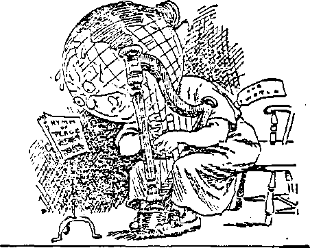

' Labor and Economics
A Glimpse at the Would News.....
Unemployment in the United States . . . Cost of Reorganizing a Railroad . .
67
67
67
Social and Educational
Annual Cost of Crime in the United States Items Relative to Population ....... The Bobbed Hair Craze.........
Girl Contestants in Athletics.......
Important Radio Conference at Washington Secretary Hoover’s Address .......
Expert Engineers Present ........
Judge Rutherford’s Address .......
Radio Is God-Given ..........
Program of Broadcasting........
67
68 63
103 103
107 108 110
126
Finance—Commerce—Transportation
Items Concerning Automobiles .........
Arm New York's Motor Maniacs........
100
117
Political—Domestic and Foreign
Symptoms of World Sickness ...........
Southern and Eastern Europe ...........
Will the Earth Ever Learn the Hymn of Peace? (Cartoon)
101
101
112
* ? Agriculture and Husbandry
The Other Animate............
Travel and Miscellany
Home-Made Rainbows ..........
in
Religion and Philosophy
Others Mat—We Can Not ........
Orthodoxy or Heresy—Which? ......
Should Get Back to the Bible ......
That Ministerial “Call”......; .
Letter from the Apostle Paul (?) .....
Studies in “The Harp of God’*.......
102 118 11D 123 123
127
Published every other Wednesday at 18 Concord Street. Brooklyn, N.Y. U. S. A., by WOODWORTH, IICDGTN’GS A MARTIN
Copartners and Proprietors Address: 1A Concord Street, Brooklyn, N. 7., U. 8. A. CLATT0N J. WOODWORTH . . . Editor ROBERT J. MARTIN . Business Manager WM. F. HUDGINGS . . Sec'y and Treas.
Five Cents a Copt—$1.00 a Trar Mare Reuittanccs to THE GOLDEN AQB TwtiQVt Orness : British.....34 Craven Terrace. Lancaster Gare, London W. 2
Canadian.....- . . . .'•:s-4O Irwin Avenue, Toronto, Ontario
Australasian ....... 4D5 Collins Street, Melbourne, Australia South African......6 Leila Street, Cape Town, South Africa
Entered as second-class matter at Brooklyn, N. Y, under the Act of March 3, 1679
Volume VI Brooklyn, N. Y., Wednesday, November 19, 1924 Number 135
A Glimpse at the World News
[Radiocast from WATCHTOWER WBBR on a wave length of 273 meters, by the Editor]
AFTER a five-year study of unemployment, the Russell Sage Foundation reports what everybody knows to be the truth; namely, that . taking one year with another, from ten to twelve percent of the workers of the United States are out of work during some part of ---the year. The Foundation hopes for some •public employment agency in America similar * those which have been for many years ii existence in Germany, where workingmen ma; register and may confidently look for employment without the necessity of paying out fees to employment sharks. On October 1 there were 300,000 men and women out of employment in New York city.
Arthur Brisbane says that ten thousand years from now, those then living can learn all they will ever wish to know about our civilization in - the story of Andreas Friedrinsk, sixty-eight years old, who had been a hard and honest worker for sixty years, and who lulled himself because he was worn out, could find no employment, and was destitute.
Mrs. Mary Koledo, 727 Prospect Place, Brooklyn, compelled to go out to work and un-• able to endure the thought of her two-year-old child remaining all day in a day nursery, finally decided, after crying about the matter several nights, to give her child away to persons who pvould be kind to the child and who would give aer the advantages of a good education. Our advice would have been for her to keep the child. In the school of adversity, under the sunshine of a mother’s love, a child would learn more valuable lesions than can ever be gained from books.
- The Interstate Commerce Commission is conducting an investigation to find out why, a few years agor it cost only 32c per thousand dollars to reorganize the Southern Railroad; whereas, it cost $7.43 per thousand dollars to bring about a reorganization more recently of the Missouri, Kansas & Texas system. An inquiry developed that the lawyers exacted for their services $500 per day when they worked a full day, or $65 per hour when they worked by the hour. Compared with the wages which common people receive, these charges are, of course, exorbitant.
THE fiftieth annual convention of American bankers expresses itself as staggered at the annual cost of crime in the United States, amounting to $3,500^000,000. We have a suggestion as to how they’can reduce this: Let them not undertake hereafter to crowd the United States Government into wars in France, ' Haiti, Honduras, Nicaragua, or elsewhere.
Let them cease to finance sugar steals, and -every other land of steal. Most of all, let them . .
discontinue their attempts to crowd the United k States Government into the World Court or into the League of Nations, the object of which, on \ their part, is the cancellation of the debt of $12,- - ■>
000,000,000 owed to the American people by Europe, so that the $3,000,000,000 loaned by these same bankers to European nations, and now practically a worthless investment, may be ' brought up to par. .£*
Somerset, Vermont, township is fading away. . . {• It did boast of twenty-seven citizens of all ' *. ages in the census of 1920. It then .had ten ’
voters; now it has but two. The Secretary of y-
State of Vermont has been appealed to for a decision as to what is best to be done under the ‘ circumstances. The rural districts of Vermont have largely been taken over by wealthy New. '7 Yorkers who live there only two months a year. Hence the population of the state remains sta- ; tionary or declines. ...
Aviators who have crossed the United States ■/'
. >zfrom one coast to the other report themselves C '’•"as greatly inpresSed with the immensity of lonely, isolated territory beneath. The population is practically all strung along the railroads.
..'Away from the railroads there are hardly any ' signs of life.
v The Jewish Year Book shows that in New :■ York city alone there are now more than 1,500,000 Jews. Chicago and Philadelphia each have 1 over 200,000 Hebrews; while Cleveland, Boston, J St Louis, Pittsburgh, Baltimore, Newark and ■ Detroit each have 50,000 or more. The Jews ; ’ are to be found in large numbers wherever
■ . business is good, and they are not to be found
i * where business is bad.
■ ; Business men are complaining that the wars
■ in China, Honduras, Brazil, Ecuador, and Chile are hurting business, and for that reason they are in favor of peace. This discovery of , business men that war is a curse and a nuisance 'and ought to be abolished, is a valuable one.
It is almost as valuable in its way as the discovery by the preachers, five years after the war was over, that war is un-Christian and should not be encouraged.
IT IS generally, supposed that Lieutenant Smith, commander of the American 'round the-world flight, is a man of iron nerve, unmoved in the face of the greatest dangers; but he met his Waterloo at San Diego. His mother rushed up to him and was kissing him all over his face. This would have been all right if the old man had kept out of it; but his dad reached for him, and planted a smack on his ear, the only place he could reach. This was too much for Smith, and he broke down and cried.
It seems incredible that the Ford Company should have manufactured and distributed over 10,000,000 machines, and should be able to put forward truthfully the claim that it constitutes the greatest transportation system in the world; i. e., greater than either the Pennsylvania or the New York Central railroad systems. In 1924 ; there werex registered in America 15,552,077 automobiles, or one for every seven persons in the country.
Deaths caused by automobiles have now reached the astounding number, in the United States, of 1400 per month. The speeds of ve-hides in the streets continue to increase.
GOLDEN AGE
Nearly every village and city has signs: “Speed limit 15 miles an hour.” But apparently no automobile driver pays the least attention to them: for speeds of 25 to 30 miles an hour in crowded city streets are matters of every-day occurrence. 17,000 persons hurled into death ; every year is certainly an intolerable situation.' At present most jurors drive automobiles, and it is hard to secure indictments and still harder to secure convictions.
T^HE “Physical Culture i_«gazine” has colA lected the opinion of several authorities all of whom agree that the bobbed hair craze is sure to lead to baldness, sooner or later. The reason’ for this is that human hair is like a tube sealed at the free end. When the hair is cut, the oils which are the life of the hair become dissipated. The reason why men grow bald so quickly is that they have their hair cut so frequently and, in addition, wear tightly fitting hats, which cut off the circulation of the scalp. The reason why women, hitherto, have had such beautiful hair is that they have not cut it; and the twisting and folding of the hair has helped to retain the natural oil. Many women have turned against the fashion of bobbing the hair, and are letting their hair grow again.
The Boston University Athletic Committee has decided that all girl contestants for athletic honors in that institution must stop smoking, must sleep eight hours each night, and must obtain at least seven hours outdoor exercise, weekly. Moreover, hereafter they are to be allowed but once a day, in the morning only, just one cup of tea or coffee, which some refer to as poison. '
Mount Shasta, the pride of California, which can be seen on the northbound trip by rail from 4 a. m. to 4 p. m. en route from Sacramento^ to Portland, has had a cave-in, the walls of Mua Creek Canyon having collapsed for a distance of eight miles.
Talk about “stepping on it'*! In the great storm which ravaged southern Wisconsin, the tornado removed the roof from Frank HedleFs barn, lifted an 1800 pound bull out of the barn, carried it over two fields, and buried it head first, deep enough so that only the hindquarters and the tail were visible.
Frederick E. Covdert, international lawyer, just*returned from Europe, states that the Balkans are seethingwith discontent, that no one seems satisfied, and that Hungary is likely to have war with Rumania. He thinks that Germany will make the first two reparation payments on the Dawes Plan to get the»British out of Cologne and the French out of the territory they are holding; and that then payments will stop, and the real troubles will begin.
A writer in the New York Times analyzes the military conditions throughout the world and arrives at the logical result that Sutside of Japan there is not, except in Europe, an army capable of aggression. He points out that the peace-time strength of the Allies in Europe today is twenty-five percent larger than were the armies of Germany, Austria-Hungary, Bulgaria, and Turkey in 1914. Today, the Allies have 2,000,-000 soldiers under arms, against 200,000 soldiers of the Central Powers, a superiority of ten to one. We quote a- pungent paragraph from his articles:
“The crux of this whole question of land disarmament is thus to be found in Europe. It is from Europe that the rest of the world has derived at once its munitions and its mind for war. Disarm Europe, and you relieve the tension along the frontiers of India, you deprive the tuchuns of China of their imported guns and ammunition, and you arrest the training of colored troops in Africa. Europe is the headquarters of war, and without Europe war within our time must be merely & local disorder.”
Japan’s successful insistence at the League of Nations arbitration conference that the exclusion by one country of immigrants from another must be considered outside of the field of arbitration, has led the French newspapers to predict an early outbreak of war between America and Japan.
Japan has been suffering from a rapidly-spreading plague of meningitis, taking the form of sleeping sickness. Most of those affected are over sixty years of age, with deaths in about half the cases. At one time the deaths reached nearly a thousand a day.
Northern apd Western Europe
TpNGLAND has endured the throes of a general election, the Tories having most unwisely, we think, made Mr. MacDonald’s position as premier untenable.
In the city of Lille, France, a state was so;; driven into the ground as to cut an electric j power cable supplying four big factories. An :■ elephant was tied to the stake, and suddenly became the busiest elephant in France. He ' rushed madly about, tugging frantically at his chain. In a few minutes up came the stake, and the elephant suddenly became calm-
Four factories were put out of commission by the loss of the electric current which had passed through the nervous system of the elephant. The elephant did not seem to be any the worse after taking the electric cure in this dramatic fashion. In the same city, on the previous day a mouse had caused a short circuit in the central electric generative plant, causing a $25,000 fire, and throwing half the city into darkness.
With ten passengers aboard and with their baggage as well as with mails for London, a French airplane has made the trip from Paris to London, 245 miles, in one hour and forty-seven minutes. It is hard for an American to realize that the capitals of these two great countries are so close together.
The largest restaurant in the world is at Lyons Corners, London. It has four floors and basement, seats 4,000 guests at one time, and feeds an average of 12,500 people a day.
At Luzerne, Switzerland, is a wooden bridge 600 feet long, built in the year 1333. This bridge is still in use. In the middle of the bridge is a tower, which was used as a prison for 360 years.
In Bern, Switzerland, the sidewalks are all under cover, malting one line of arches. Markets and display cases are on the outside of the sidewalk.
IN VENICE, the pigeons are fed regularly each day at 9 o’clock and at 2. Near the place where they are fed is a campanile in which the hours of the day have been struck for five centuries. Immediately when the clock strikes the hours of 9 and 2, the pigeons come by the thousands to the place where they are fed; but they pay no attention to the clock as it strikes the other hours of the day.
Realizing that his hold on Italy is. slipping because he cannot control the Fascisti organization of which he is the head, Premier Mussolini is now seeking to retain his grip upon the peo*
fet?v1C8' Th.
|g?ple by erecting in Rome the tallest and largest s ^ skyscraper in the world. The building is dc-
-^signed to have a height of 1100 feet, divided into 88 floors. It is planned as a civic center, and besides 4500 rooms will house a huge
. ^theatre, a gymnasium, and 100 large halls. This ^building, if constructed, will be 308 feet higher fe ' than the Woolworth building, and 100 feet high-
er than the Eiffel tower.
' Dr. Havichich, Minister of Jugoslavia, now in >; New York, reports that his country is recover-•Y.. fug splendidly from the devastation caused by ;the war; that the railroads are being changed f. from narrow gauge to standard gauge. Jugo-f : slavia produces a cement which so dries over-" night that roads made of it can be used the next *. day*
‘Efsj Brooklyn, N.X.
John Hallowell, an American mining engineer, who has been for several years in the Caucasus, states that since the inauguration of Soviet rule in the Caucasus, tens of thousands have been deported to Siberia, all the churches have been transformed into clubs and dance halls, all opposition newspapers and magazines have been suppressed, taxes have been increased enormously; and that when the recent revolution broke out, fifty-four men who had been held in prison as hostages for months were executed.
A great windstorm on September 23 swept the waters of th© Gulf of Finland over the city of Leningrad, washing away the wooden blocks with which the central part of Leningrad is paved. The storm did millions of dollars damage, and cost the lives of ten persons.
IF GOD has called us to be really like Jesus, He will draw us into a life of crucifixion and humility and put upon us such demands of obedience that we will not be able to follow other people or to measure ourselves by other friends; and to many of us He will seem to permit other good people to do: things which He will not permit us to do.
Other friends who seem very religious and useful may push themselves, pull wires, and work schemes to carry out their plans; but we can not. If we attempt it, we shall meet ■with such failure and rebuke from the Lord as to make us sorely penitent.
Others may boast of themselves, of their work, of their addresses or their writings; but the holy spirit ■will not permit us to do any such thing. If we begin it, we shall be led into some deep mortification that will make us despise ourselves and all our good works.
Others may be allowed to succeed in making money, of may have a legacy left to them, but it is likely God will keep us poor; for He wishes us to have something far better than gold, viz., a helpless dependence on Him, that He may have the privilege of supplying our needs day by day out of an unseen treasury.
The Lord may let others be honored and be put forward, and keep us hidden in obscurity, because He wishes to produce more choice, fragrant fruit for His coming glory.
He may let others be great, but keep us small. He may let others do a work for Him and get the credit for it, but He will make us work and toil on without knowing how much we are doing. Then, to make our work still more precious, He may let others get the credit for the work which we have done, and thus make our reward ten times greater in the day of reckoning.
The holy spirit will put a strict watch over us with a jealous love and will rebuke us for little words and feelings, or for wasting our time, when our friends never seem distressed over such things. So make up your mind that God is an infinite Sovereign, and has a right to do as He pleases with His own. He may not explain .to us a thousand things which puzzle our minds in His dealings with us; but if we absolutely sell ourselves to be His love slaves, He will wrap us in a jealous love, and bestow upon us many blessings which come only to those who are in the inner circle.
Settle it then forever that we are to deal directly with God; and that He is to have the privilege of tying our tongues, of chaining our hands, of closing our eyes.
Now when you are so possessed with the living God that in your secret heart you are pleased and delighted over this peculiar, personal, private, jealous guardianship ’and management of the holy spirit over your life, you will have found the vestibule of heaven.
{Reported by our Special Correspondent)
THE third Radio Conference was held at Washington during the week of October 6th. The conference was called by Mr. Hoover, Secretary of the Department of Commerce. To - this conference he invited the government radio inspectors in each district in the United States and all owners of radio stations in the United States.
The conference opened on Monday evening at the Assembly Hall, Department of Interior, attended by about 500.
, The principal address was delivered by Mr. Hoover. Mr. Hoover’s address follows herein —in full:
IT IS a pleasure to me to open the Third Annual
Radio Conference at this Department and to welcome you to its sessions. Your willingness to leave your usual business and give your time and attention to this conference bears witness both to the importance of radio in the lives of our people and to your desire to perform a public service.
Radio has passed from the field of an adventure to that of a public utility. Nor among the ‘ utilities is there one whose activities may yet come more closely to the life of each and every one of our citizens, nor which holds out greater possibilities of future influence, nor which is of more potential public concern. It must now be considered as a great agency of public service, and it is from that viewpoint that I hope the difficult problems coming before this conference will be discussed and solved.
. At the first radio conference I hazarded some ■ modest anticipations as to its development and use. Some thought them visionary; yet we ? passed every point of these anticipations within eighteen months. We have, in fact, established an entirely new communication system, national : in scopfe.
t' In the whole history of scientific discovery
there has never been a translation into popular use so rapid as in radio telephony. So late
i as the yea-f before I became Secretary of Com-
I merce there were no broadcasting stations. At
, the end of four years 53d are in operation, mak-
j. ing radio available to every home in the country.
A The sales of radio apparatus have increased . 103
from a million dollars a year to a million 'dot lars a day. It is estimated that over 200,000 men are now employed in the industry, and the radio audience probably exceeds twenty millions of people.
We may well be proud of this wonderful development, but in our self-congratulation let us not forget that the value of this great system does not lie primarily in its extent or even in its efficiency. Its worth depends on the use that is made of it It is not the ability to transmit but the character of what is transmitted that really counts. Our telephone and telegraph systems are valuable only insofar as the messages sent from them contribute to the business and social intercourse of our people. For the first time in human history we have available to us the ability to communicate simultaneously with millions of our fellow men, to furnish entertainment, instruction, widening vision of national problems and national events. An obligation* rests upon us to see that it is devoted to real service and to develop the material that is transmitted into that which is really worth while. For it is only by this that the mission of this latest blessing of science to humanity may be rightfully fulfilled.
The conferences of the past three years have been called in the belief that it was by your cooperation that the requirement of the law could best be met which declares it to be the duty of the Secretary of Commerce to "foster and promote the commerce of the United States".
Beyond this, certain minimum regulatory powers rest in the Department I have been convinced that development could be accomplished only by organized cooperation of the industry itself; and the industry is unique in that unless it has stringent rules of conduct ’ to which all elements 'adhere it will die of its own confusion.
At each succeeding conference we have had more difficult problems to solve, and those which we present today are of a complexity greater than ever before. In a large sense the purpose of this conference is to enable the listeners, the broadcasters, the manufacturers, and the marine and other services to agree among themselves as to the manner in which radio'activities are to be conducted.
s. Like the-two previous occasions, this may he called an experiment in industrial self-government. Radio activities, so long as they remain within the legislative restriction which holds for the government the fundamental control of the ether, are largely free. The industry’s future conduct with a single view to public interest, a voluntary imposition of its own rules . and a high sense of service would go far to make further new legislative or administrative i intervention unnecessary. The two past con. ferences have been successful in these purposes. . With only slight modifications made necessary ‘by changing conditions, the, Department has , I been able to follow their recommendations in . the performance of its duties. The industry _____ has supported and conformed to these recom' mendations cheerfully and uncomplainingly, although at some self-sacrifice. I congratulate you on this spirit, and know that you will enter upon your* new deliberations in the same attitude.
Broadcasting Programs
WHEN broadcasting first started, the phonograph was a sufficient attraction to the radio telephone listeners, who were swayed chiefly by curiosity and marvel at the new discovery. Public interest has long since passed this stage.
, The radio telephone would now die in twenty-i four hours if it were limited to transmission of ■ phonograph records. We have made great improvements in material transmitted. Original music, speeches, instruction, religion, political exhortation—all travel regularly by radio today. Program directing has become one of the skilled professions. I have indeed a great feeling for the troubles of the director in his efforts to find talent and to give to his audience the best that lies at his command. He has done extraordinarily well.
But’we require a still further advance in the character of material beyond the capacity of local station directors if the art is to emerge entirely from the curio and entertainment stage to that of fundamental service.
Experimental broadcasting upon a national scale during the past year has now brought us to the stage where we know it can be done. The local material available for the local pro--i. gram is not in my view enough to maintain "’I assured interest, and therefore the industry,
or to adequately fulfill the broadcasting mission. ■ So far as the art has developed, I think we '
all agree that for accuracy and regularity of -
reception we can depend only upon the local ? broadcasting stations. My proposition is that the local stations must be able to deliver every important national event with regularity. The / local station must be able to bring to its listeners the greatest music and entertainment of -; the nation, but far beyond this it must be able * to deliver important pronouncements of public men. it must bring instantly to our people a hundred and one matters of national interest. . To this it must add its matters of local interest. This can be accomplished only by regularly organized interconnection on a national basis * with nationally organized and directed programs for some part of the day in supplement to more local material.
It may be stated with assurance that the z greatest advance in radio since our last con- * ference is the complete demonstration of the feasibility of interconnection. We owe a debt of gratitude to those who have blazed the way. The pioneers have been the American Tele- . phone & Telegraph company in wire interconnection, and the Westinghouse Electric & Manufacturing Company in radio interconnection . through the use of short wave lengths. Their . experiments have involved technical skill of the-highest character which could be found or contributed by few other organizations in the world. Their expenditures, running into the hundreds of thousands of dollars, have -been made without direct consequential return. It 1 has been possible to broadcast many national events qver three-quarters of the United States during the past year, and the whole country has been covered twice. The service deserves ■ the appreciation of the public; for it has demonstrated this great thing to be practicable.
It is our duty to consider the possibilities and potentialities of interconnection as a regular daily routine of the nation. Unless it be systematically* organized we cannot expect its con-' tinuation. I realize that this matter, except insofar as it may be fostered and encouraged, does not lie in the Government. It would be unfortunate indeed if such an important, function as the distribution of information should ever ' fall into the hands of the Government. It would be still more unfortunate if its control should
> come under the arbitrary power of any person or group of persons. It is inconceivable that such a situation could be allowed to exist. But I am riot now dealing with monoply. Nor is this a question where any one lays claim to a
1 v monopoly. Interconnection is going on to local extent and over the wires of the telegraph companies, the telephone companies, and by radio itself. We have promises of super radio and we have promises of interconnection of j|ired wireless. If there are several methods, means that we might have several alternative programs always available. But whatever the method of interconnection may be, we are lack-j ing in a definite organization of a national sys-i tern of programs and a basis of support.
I I believe that the quickest way to kill broad-; casting would be to use it for direct advertis-; ing. The reader of the newspaper has an option > whether he, will read an ad or not; but if a speech by the President is to be used as the 1 meat in a sandwich of two patent medicine advertisements, there will be no radio left. To what extent it may be employed for what we now call indirect advertising I do not know, and only experience with the reactions of the listeners can tell. I do not believe there is any practical method of payment from the receivers. I wish to suggest for consideration the possibility of mutual organization by broadcasters of a service for themselves similar to that which the newspapers have for their use in the press associations, which would furnish programs of national events and arrange for their trans-mission and distribution on some sort of financial basis just as the press associations gather and distribute news among their members.
It may be that we can not find a solution at f this moment, but I believe that one result of this conference should be not only the consideration this question but the establishment of a con-: tinuing committee for its further consideration.
There are other matters to which I hope the conference will give its attention.
ONE of the most important subjects for your consideration is the providing of operating channels for broadcasting stations. Of the present 530 stations. 57 are Class B, operating on from 500 to 1,000 watts and having a wide range, and 387 are Class A, many using small power and covering small areas. There are ■ still 86 Class C stations, most of which have low power, all on a wave length of 360 meters. •' Our chief trouble is with the Class B situation. ’’ They are all assigned within the band of 288 to 545 meters, within which there are, under the present system of allocation and excluding the Class C band, only 44 available channels, and only 33 that seem desirable at present. To assign these among the 57 stations necessarily means duplication, although it was the theory of the last conference that individual wave lengths could be assigned to each* At present, , 23 stations either have exclusive wave lengths or are sharing with stations so distant that both may operate simultaneously, while the remaining 34 are compelled to divide time. The greatest congestion is.intthe large cities, New York and Chicago particularly. A recent survey made by the Supervisors of the various districts shows that 21 new Class B stations are now under construction and that 25 others are contemplated, so that the question of allocation is one of increasing difficulty. It was the recommendation of the last conference,^and has been the practice of the Department, to separate stations in the same zone by at least 50 kilocycles, in adjoining zones by at least 20 kilocycles, and in separate zones by at least 10 kilocycles. In the light of scientific and technical development in both transmitting apparatus and receiving sets, it may be that a different plan of zoning or of station separation may now be used, thus creating additional wave lengths for assignment. It has been suggested also that the band now reserved for Class B might be somewhat broadened. Removals of Class C stations from the Class B band would likewise give some relief, depending on what proportion of the present Class C stations qualify for Class B licenses. I am not advising any particular method of solution, but recommend the entire subject to your careful consideration.
ANOTHER question of importance is the limit of power to be used in broadcasting. Most Class B stations are now operating on 500 watts. A limitation of 1000 watts is imposed in the license. I understand that there are several stations erected or in course of construction
which contemplate 'the use of power up to 5000 [ watts, and I am aware of the suggestions of those who would go beyond even this. There is opposition to the plan. Its advocates tell us of the great advantages in the way of louder signals and more distant transmission, while - opponents complain of interference and drowning out of other stations. The latter fear is particularly acute when the powerful station is located in a congested receiving center. From the viewpoint of .nation-wide broadcasting, the question becomes as to whether we should aim to cover a large territory through a single ' powerful station, or through a number of interconnected smaller ones. We must not stifle progress in any direction. We must not do anything that will interfere with the programs of local stations on which many of our people 'depend, nor with the wide selective range which they now have. It may be that both purposes may be accomplished without loss to either. I recommend the subject for your most careful consideration, and hope that you may be able to reach a satisfactory conclusion.
THERE seems at present some tendency toward a decrease in the total number of broadcasting stations. September 1,1923, there were 563 licensed stations. On the same date this year, the number has fallen to 533, a loss of 30. This decrease, however, has occurred entirely among the smaller stations in Classes A and C. The more important stations, those of Class B, have substantially increased, the number then having been 44 as against 56 at present, with 46 others either under construction or proposed. As to whether this shows a permanent trend toward an abandonment of the smaller stations, with a corresponding additional reliance upon the larger ones even though more distant, it is too early to determine.
It is of some interest to classify and study the ownership of the stations, to know the probable motives that impel their owners to expend the large sums of money which are necessary for their^construction and operation, and for which there is usually no direct return. So far as is known to the Department, of the present stations, 196, or over one-third, are owned and operated by manufacturers of or dealers in radio apparatus, whose interest is of course
apparent. Department stores and similar mer-l cantile concerns add 39 to this number, and^ publishers 41, making a grand total of 276! known stations, of which 44 are Class B, which! may be said to have a direct interest in the^ publicity legitimately resulting from their own! broadcasting. On the other side we have 85J educational institutions, 35 churches, 12 city and: state agencies, 12 clubs, of which 7 are Class B; (4 schools, 2 state or city agencies, and 1 church),! all of which may be said to operate from more; altruistic motives. 4%
THOSE who are engaged in the use of radio for marine services between ship and shore,; and ship and ship, feel that the present band devoted to their use is too narrow. We must not forget that what is a convenience or a plea-, sure for us is a necessity for them, and that life may depend on the efficiency of their communication service. There is undoubtedly con-- ‘ gestion along opr coasts particularly in the1 vicinity of such harbors as New York, Boston, /. and San Francisco. There are two fundamental; troubles in the situation, and they are interdependent: First, the character of the apparatus' used; and second, the fact that most ships operate only on two wave lengths, GOO and 706 J meters. Practically all marine radio equipment is of the spark type. There can be no j economical use of wave lengths until this con-, dition is remedied.
The London Convention of 1912 contemplated ( that ship communication would be conducted on ( 300 or 600 meters, an alternative of 1,800 meters j being allowed under certain conditions. However advisable it may then have been to have । all ships on two wave lengths, it is certainly ; not practicable now. We have here an example, and it is not the only one, of the folly of putting^ a straight-jacket on such a rapidly growing
The situation among ships today is much the < same as existed in broadcasting at the time of I the last conference, when all stations were try- i ing to operate on 360 or 400 meters. The outstanding achievement of that conference was , the adoption of the idea of giving to each station । so far as possible an individual wavelength. If ! our ships had a class of equipment which would j allow it, I am not at all sure that a similar plan could not be worked out for them with separate :
wave lengths assigned to separate groups or classes of vessels. I fully realize that this can not be done at once. I know the financial and other difficulties that stand in the way of better apparatus. I believe, nevertheless, that some way should be found to encourage improvement and likewise to jnake the better equipment freely and reasonably available. Meanwhile, some consideration should be given to a method of temporary relief. The question is one of relation. There are not enough channels to provide wthat both the marine interests and the broadcasters may legitimately desire. It is a matter of accommodation between them, givingto each as much as possible with due regard to the other. Possibly additional wave lengths above ' 600 meters may be assigned for marine use. I commend the subject to your careful attention.
I HAVE not attempted to list all the subjects that may come before you, but have merely re' ferred to a few which seem most troublesome from the administrative side. One matter that must be dealt with sometime, but over which there is no means of control at present, is the interference from non-radio sources. We listeners have all experienced frequently and to our great disgust the squeals and roars which we are told come from electrical devices of various sorts in which there is no purpose to cause audible disturbance. The Department has received a vast number of complaints based upon trespassing noises of this character. It is hard to trace them to their source, and difficult to deal with them when found. Some branch of our radio industry certainly should investigate and study them. Harmonics, too, are troublesome. It is useless to assign a station to a definite wave length if its signals go out not only on that one lljt on three or four others. Our amateurs, who - Drake up by far the largest element in the radio family outside of the listeners as a whole, are . particular sufferers, since the harmonics from , many stations have an especial tendency to invade the amateur band. Accurate and sharp transmission must be insisted upon.
THE officials of the Bureau of Navigation, which has direct charge of administrative features and full familiarity with the entire
: situation, are ready to give you the benefit of ; their information and advice.
■ The Bureau of Standards has prepared a - report on many of the technical phases which ■ will come before you, and its personnel and [ facilities are at your disposal. The Interde-■ partinent Radio Committee has done prepara-i tory work; and its members will, I am sure, ' be glad to cooperate with you in the consideration of all matters which have a governmental bearing. The Radio Supervisors from all dis-_ stricts of the country are in attendance, with ' first-hand information as to conditions, and their knowledge, based on actual experience in the field. In short, the Department of Commerce is at your command. I believe that your membership includes every angle of radio interest. I look forward to your conclusions as a great step in the development and progress of the industry.
ADDRESSES were made;by expert engineers in radio construction, dealing with the technical part of radio. Some strongly advocated the granting by the government of the privilege to build and operate super-power stations. Mr. Saronoff, General Manager of the Radio Corporation of America, announced that his company was ready to construct within a short distance of the city of New York a fifty kilowatt station.
One can approximate what that size station would mean, when we call to mind that no broadcasting station in the United States now is permitted to use more than one kilowatt power, and that the major portion of the broadcasting stations in the United States are operating on 500 watts, or one-half kilowatt.
Several attending this conference strongly advocated increasing power in order that programs could be broadcast throughout the United States, and could be heard easily in Europe.
xlmong those present was Judge Rutherford, President of the International Bible Students Association. He addressed the conference Wednesday, making the following specific recommendations :
(1) That stations be licensed and use higher power; ' b '(2) That the time for broadcasting be so divided and regulated by the Government that * it may not be monopolized by any single in-‘ terest;
“ (3) That programs be so designated by public I advertisement that the people may know what 1 to expect from each station at stated times.
b .We give Judge Rutherford's address in full:
ADIO broadcasting has quickly become a wide means of entertainment and amuse
ment It can be made a far greater medium of education.
■ While it is true that amusement and enter; tainment are important, yet proper instruction ■ and education of the people are more vitally important. Entertainment and amusement furnish a temporary diversion. The uplift and stabilizing of the people are of far more importance. Jazz music will furnish entertainment and amusement. Instructionjn the Bible and great truths upbuilds and stabilizes the people, and brings to them a satisfying blessing.
Europe is in a bad way. Most of her difficulties may be laid to selfishness. There are threatening conditions in America. One of the best means, I believe, for preventing America from following a similar course to that which has brought Europe to her present deplorable state is proper instruction and education.
Let the mind of man meditate upon high and noble things, and he ceases to be a dangerous animal
It is eminently proper that the people should be instructed concerning the development of science and invention, the building of highways and homes, the improvement of the land and the beautifying of the landscape, hygiene and health, as well as physical and mental culture.
It.is of equal, if not greater importance, that the people should learn more about the Creator who provided all these blessings for man. Let man be instructed that all the blessings he enjoys proceed from a kind and loving God, and such knowledge will produce in him a kind and thankful heart. This condition of thankfulness and gratitude leads to unselfishness, which is a proper definition of love.
Unselfish men look to the general welfare of the people; and the increase of unselfishness among the people brings to them contentment,
peace and prosperity. Men and women of this type are such as constitute the stay and bulwark of the nation. ■
It should be remembered that the men who laid the foundation of this nation were moved to" do so in order that here the people might be in-, structed concerning their God and the Lord Jesus Christ without let or hindrance. With these noble sentiments planted in the hearts, of the people, the nation has prospered more than any other nation that has ever been on the earth. «-•
Any nation or people that forgets God and the Savior of man will rapidly disintegrate.
Without doubt the radio was foretold in the Bible by the holy prophets of Jehovah long centuries ago; and it has come to light exactly at the propci- time for the benefit of mankind. Surely the nation that God has favored above all other nations should honor Him in some way with the use of this modern and wonderful means of communication which He has so generously provided for mankind.
Well has the Secretary of Commerce said: "An obligation rests upon us to see that radio is developed to real service, and to develop the material that is transmitted into that which is really worth while." ■
Nothing could be said to be more worth while than the proper instruction and education of the people along lines that would stabilize them, make of them better citizens, and create happier homes.
WHILE the Government has obligations to provide for the entertainment and amusement of the people who desire such by the use of radio, it has an equal, if not a greater obligation to provide for the instruction of that growing class of people who wish to know abo^ weightier matters.
But let us not wholly commercialize this great means of communication. Such practice will work injury to the pioneers as well as to the public. Rather let us bear in mind that radio has now become a pu&Zic utility, and in its development and expansion let us keep prominently before us the general interest and welfare of the people. Radio invades the sacred precincts of the home. He who uses this great public utility as a means of communication has the responsibility of safeguarding the best interests and welfare of the home. If some want jazz music, let them have it. But others who want classical and sacred music and instruction on the higher things should be given full opportunity to receive it.
Our Association operates a radio broadcasting station on Staten Island, New York City, designated as W B B R. From reports received by us during the past six months, with positiveness I can state that there are great numbers of people who desire to listen to programs of the kind that we have been trying to give.
Our programs consist of lectures on the divine plan of the ages, instructing our hearers concerning the creation, fall and redemption of man, and the ultimate blessing of the human family on earth with health, strength, peace, life, liberty,, and happiness. Also lectures are given on the development of science and invention, health and hygiene, physical and mental improvement of men and women, together with appropriate lessons for children. These lectures are interspersed with high-class sacred and classical music, both instrumental and vocal, with current world news of first importance.
Ours is not a sectarian organization. It stands free from all denominations and creeds. We seek no membership. We solicit neither money nor men; and therefore we feel that we can properly claim that unselfishness prompts us in this work, which we do without any desire for or hope of a money remuneration. We neither ask nor receive contributions. The expense of operating is borne by men and women who have some money and who desire to spend it in the interest of humanity.
IN BROADCASTING our programs from our present station and from others that are now in course'of construction, we would like to use more power than is now permitted under existing governmental regulations, in order that the programs might be heard over a wider area of the United States and Canada and even across the sea, with the hope that these programs might bring some comfort and consolation to the sorrowing ones of bleeding Europe.
We therefore think it proper, and respectfully recommend, that the Government grant the use of greater power for broadcasting by
increasing the power limitation of Class B- v stations to at least two kilowatts, or even more, for use at stated times and under certain con* ditions. ,
PON the theory that radio broadcasting is a public utility, the Government now ;
exercises control of the ether. It therefore devolves upon the Government, in justly exercising its powers, to so regulate the use of the ether that the interests of all concerned will be safeguarded, and to the end that no one shall have or maintain a monopoly of time or any . wave length.
The present practice of granting to a broadcasting station the exclusive and unlimited control of the wave length under which it is licensed to operate is one of the obstacles to . the development and expansion of the radio art. Such a practice seems neither fair nor just It results at least in a partial monopoly. It is hardly reasonable to ask the public to listen to one station all day: The interests of the listeners should be considered.
I therefore suggest that, where there are two stations within the same district using the same wave length, they could well divide the time. Even four stations operating on the same wave length in the same district could divide the time properly. The hours between 7 and 11’ pm. being the best for radio broadcasting, if ' each of four stations operating on the same wave length could be given, say, two hours on . each of three and sometimes four evenings a week, such practice would enable the people to have a greater variety of programs and thus prove more satisfactory to both broadcaster and ■ listener. '
For example, suppose there are two stations in one district operating on the same wave . length. They should be requested to meet and properly divide the time. If either one fails or refuses thus to do, the Radio Supervisor : < should be clothed with authority to make a proper division of the time. It it manifestly unfair to the public, as well as to broadcasters, -; to grant a license to one station and pennit that ' station to have the unlimited privilege of controlling the entire twenty-four hours of each and every day. .
A station devoted to the broadcasting of pro- ' grams of the kind mentioned above could well be ^confined to two hours an evening and three to four evenings per week. '
It is true that certain bodies of men have blazed the way in bringing radio to its present state of efficiency. In this they have been greatly honored; and for such they should receive appropriate consideration in the use of the ether. It should be their privilege to broadcast for hire if they desire, and they might properly.be given a wider allotment of time for that purpose than are others.
This suggested method of time allocation under Governmental regulation would serve for general purposes. Special arrangements would necessarily be required to cover the occasional broadcasting of events of national importance through interconnected stations.
I FURTHER suggest that when an application for license is made, the applicant be required to state in his application the kind or nature of program he desires to broadcast; and that when the license is issued, the kind or nature or program shall be limited at least to what the application calls for; that then due public notice or advertisement be given of the kind or nature of the program of such station. This being done, the public will know what to expect from certain stations regularly, and will not be required to spend a large portion of the evening tuning in and tuning out stations, trying to find something desirable..
IN CONCLUSION I summarize the following recommendations:
(1) That the Government license stations such as above described to use higher power, within reasonable limitations;
(2) That , the time for broadcasting be so ’divided and regulated by the Government that it may not be monopolized by any single interest;
(3) That programs be so designated by public advertisement that the people may know what to expect ?rom each station at stated times.
Jehovah has honored America by permitting her to take the lead in the development of radio. Let the nation now honor Jehovah by making ample provision for the people to hear concerning His plan for the blessing of all the families of earth.
In view of the fact that radio has come to us clearly in fulfilment of divine prophecy, as I believe, it is of real interest to me to note that one of the pioneer companies of America which has done much in furthering radio broadcasting has for its Vice-President and General Manager a natural descendant of Abraham, the patriarch of Israel, whom God promised to use, in His due time, to bless all the families of earth. I venture the prediction that Abraham will yet stand in Jerusalem, the capital of the Holy'Land, and by the use of radio speak with authority and be heard by all the peoples o£ earth. '
HIS was the only address to the Conference that called attention to the fact that the radio has come in fulfilment of prophecy; that due honor should be given to the Lord because He is the great Giver, and that hence the programs should embrace more about Jehovah, the Lord Jesus, and God's kingdom.
Broadcasting is, as we believe, one of the best methods of spreading the message of the truth concerning Messiah's kingdom, because it enables many to hear the message who would not attend a public meeting. Doubtless the Lord has brought this to light just at a time to suit His purposes.
When Judge Rutherford concluded his speech by calling attention to the fact that Abraham would yet’stand in Jerusalem and speak with authority to the people and be heard all over the earth, this was received with hearty applause from the delegates.
All Christians are interested in radio now, because it is a method of telling the peoples of . earth how the blessings are coming to them through God's arrangement.
Mr. Hoover appointed three general committees to consider matters of importance and report to his Department; after which, under the law, he will render his decision as to what shall be done with reference to increase, of power, the licensing of stations, and the character of the programs. -
I
“TTAVE you a little fairy in your home?” is . Ila well known and catchy question used by a manufacturer of soap to encourage clean; - liness and profit A fairy is supposed to be
w ■ good, and to shower blessings around to make
. folks happy. Soap and water, especially when
■ applied to the hands and faces of lit^e children,
tend toward happiness—at least to Mother, who does not particularly relish the transfer of jam, fruit juices, chewing gum and candy from sticky hands to freshly laundered table-cloths and center-pieces.
If the soap fairy is a good friend to have around to keep things clean in the home, why * not find a “rainbow” for keeping us in a “cheerful frame of mind”? Have you a little rainbow in your home?
The first rainbow appeared after Noah had . left the Ark, and during his offering of thanks to God for the transfer from the Old World into the New. This beautiful rainbow was God’s pledge that the earth would never again be overflowed with water, and was formed by the Lord through the operation of natural laws. The sun was its father, and the cloud was its mother. The pure, wliite ray of sunlight shining through ■ the bank of mist, which acted as a prisiu, was broken up into the various colors now visible in our rainbows. Light contains all colors. Darkness has no light and, therefore, has no colors.
God is personified by one of His great attributes, LOVE. “God is Love,” say the Scriptures. This promise of Jehovah to Noah, evidenced by the rainbow, guarantees that mankind will be spared to see the glories of His sweet, pure, noble, and wonderful character— the real rainbow. When will all see? A good question; but we are now anxious to glimpse in the home the little rainbow without which the beguties of the world rainbow can not be appreciated.
Light beautifully symbolizes love; water pictures truth. The sun’s rays penetrating mist > create, or form, the varicolored rainbow'— ‘ violet, indigo, blue, green, yellow', orange and J red. God’sdove, shining through the mind which ■r. has collected a “cloud-bank” of truth, is broken t' up into the various qualities of love; viz., peace,
, joy, hope, patience, faith, long-suffering, self-
;• ' control, benevolence, etc. As the literal bow adorns earth’s sky and horizon, so our mental bow beautifies the dome of the consecrated home, and excites wonder and admiration as its glow and cheer are observed and felt by all who are privileged to enter such a home.
Where true love dwells, there are peace and joy and the other graces, so beautiful, so satisfying to the heart which has realized by actual experience the darkness which oppresses to despair the soul unacquainted with divine tenderness and mercy. Guard well that priceless light of the mind, and the truth contained therein, and your bow will always be bright and shining! Lose them, by whatever means; and men and women are husbands and wives in name only—* a hideous, hollow mockery.
HE safest place to have the motto, "God Bless Our Home,” is not on the wall, but in the mind. ‘Husband/ St. Paul admonishes, ‘cherish your wife as your own flesh? (Ephesians 5:25, 29) Do you hate yourself? ‘Wife/ the same great Apostle instructs, ‘love your, husband.’ Christ cherishes His Church; and the Church loves her Husband and honors Him.
You, whoever you are, wherever you dwell, S whatever your color or race, be true to your marital vows. Let no thief in any guise take away that sweet fellowship and confidence which rightfully belongs to your mate, and to none other. To transfer your affections and the intimacy of mind from husband or wife to another means nothing less than mental adultery. The Scriptures indicate that one who persists in doing this wilfully shall be swallowed up of the second death. Therefore one who is inveigled into such an entanglement by the adversary’s working through the lower propensities of the' mind, and does not swiftly rectify this mistake, is in grave danger. Make a vow unto the Lordin respect to this and keep it—which is perfectly and demandably possible. A clarion note of warning has sounded from heaven: “Keep back thy servant also from presumptuous sins; let them not have dominion over me: then shall I be upright, and I shall be innocent from the groat transgression.”—Psalm 19:13.
Thom is nothing to replace this home rain- . bow, if it should go out, but darkness—the ab- ; sence of light, the absence of unselfish love. <
. in
The devil’s bow consists of the various shades of darkness: Hate, jealousy, strife, passion, cursings, bitter words, creepy suspicion, etc. il How many husbands help wash dishes, make beds, sweep floors and dust the furniture? How many wives study food charts to supply proper nourishment for hubby and the kiddies, darn socks and stockings, sew on buttons where they are needed, and keep a tidy house? How many ^husbands and wives kiss each other when the husband goes to work in the morning, and re-j turns in the evening? How many fathers con’ duct family prayers, and preside in true dignity .at the breakfast table to dispense natural food I and to encourage the partaking of spiritual I nourishment? How many parents are chaste ■ in word and conduct in the presence of their ■ children and before each other, taking to heart the face value of the words: “Let no corrupt communication proceed out of your mouth”?— Ephesians‘4:29.
It is the little tilings which count and go to make up a happy home, or the reverse. How many fathers and mothers look forward into t the future and see in vision their sons and daughters grown up and in favor with Christ in the Golden Age, and seek now to prepare th*ni for that great kingdom, training them up in the way in which they should go so that they will not be food for the jaws of eternal death? Responsibility in tills respect can not be shirked; and it may be that failure to instruct and control your children will decrease your own chances for life, and certainly dim your prospects for the “crown of life”.
Tp INCLINED to be stingy with the wherewithal to buy, you should be unselfish enough to cut out this work of the flesh with the keen knife o£ true nobility. Be generous (not extravagant) with money, and to a fault.
Do not nag! A contentious woman [or man] is like a continual dropping in a very rainy day, says the wise man. (Proverbs 27:15) The constant dropping of water upon a stone will wear
UHOOKLYN, N.T. ’
a hole in it; so nagging, day in and day out, will wear a hole in someone’s patience.
Husband, conduct yourself so nobly and so Christlike that your wife will not feel it her duty to usurp some, or all, of your authority in the home and endeavor to rule according to the dictates of her conscience, however perverted that conscience may be. Wife, be a queen in the home, a dispenser of cheer and good will, a woinanly Christian.
True, some days must be dark and dreary, but the rainbow shines brightest witji a dark^ background. Passion and irreverence should have no place in the Godlike home. They can not have admission, and the home remain a blessing.
Truth retained in the mind makes it transparent to the light of God’s love. Error, whether of doctrine or of conduct, to the extent that it is encouraged, makes the mind impervious, or opaque, to truth; and the light of love can not have freedom of action.
The “colors of the rainbow'" can not properly assemble in fonnatjon. “Cleanse thou me from secret faults," is an appropriate dailyprayer which should ascend from every heart desiring this halo of blessing in the home as a “promise” of perfect and sweet accord in the great hereafter.
WILL SHE EVER LEARN IT? AKRON <OJ BtACON JOURNAL
Not on a ’harp’ with eight string's-The Golden Age
>' -------------------------------- . •
' In Golden Age, number 129, page 28, column makes the word “uprightness” appear as “un-
2, paragraph 3, line 15, a typographical error righteousness”.—Psalm 9:3.
HITHERTO we have discussed hoys and girls and grown-up humans in The Golden ‘Age, but have not paid much attention to the other animals. Now is their turn; and first on the list is the animal that by common consent is the most lovable of the brute creation, the dog, £nd next to man the most intelligent.
Who has not heard stories of the usefulness, the love and faithfulness of dogs? The Scotch collie brings the sheep to the shearer one at a time, as fast and no faster than needed. The Newfoundland allows no harm to come to-the child under his care. The St. Bernard brings in the traveler out of the storm, when his strength is spent and his sense of location is lost. Injured dogs have been known to seek drug stores for assistance. Dogs have been known to suicide from sorrow.
The German police-dog accepts his food from but one person, and is deaf to flatteries. The bloodhound has a benevolent disposition, but it is useless to try to escape from him when he has once taken up the trail. Walking for many miles in a stream of water is the only possible way of escape; and even then the dog is likely to recover the trail, by coursing up and down the banks of the stream.
The master of a bulldog heard him whining pitifully under the table. Looking beneath he found a child trying to cut the dog's ears with a pair of shears. He attempted to punish the child; but the dog made such unmistakable signs of his purpose to attack him unless he desisted that he was compelled to let the child remain unpunished.
A lady foolishly confided to her milkman that she had sold some property and had a large sum of cash in the house, until the bank should open the next day. Thinking to rob her he proposed to loan her his own dog for her protection, saying to her that with him in the house she could rest in safety. In the morning he was found halfway through a window, with his jugular vein severed. His own dog had killed him rather than prove false to his trust.
Near Cincinnati an Airedale saved the life of a chum, a large setter, by snatching him off the railway tra3k just as a train was bearing down upon him. In upper New York a dog picked up the body of a chum, killed by an automobile, licked her face, and whined over her body with every manifestation of grief, refusing to let any come near. One Airedale came back seven hun- * \ dred miles to the master who had sold him.
The Egyptian hieroglyphics show that dogs were companions of men thousands of years . ago, even as they are today. Herodotus tells that when the family dog died the men of the household shaved their heads in token of their grief. Mummies of Egyptian dogs are to be found in the British Museum. A dog named Rex is a regular fireman in the Newark, N. ; fire department, has answered 2,000 calls in his * seven years of service, and has rescued many ' from being burned to death. A female dog has been known to adopt five motherless kittens*
In the early days of the World War, says the New York Times, “dogs saved the French army when there were so few men that the regular number of an outpost was two men and a dog. The dogs not only warned of an approach, but were able to indicate whether the attacking party was large or small. There were three kinds of dog soldiers: The liaison dogs, those of highest intelligence; used for carrying messages; the chines de sante, that took care of the wounded; and the police-dogs, trained to track escaping prisoners. One dog carried messages twenty-seven times across No Man’s Land under heavy barrage, and the twenty-eighth time the dog was killed.”
IF DOGS have been faithful to men, some men have been not less faithful to their dogs.
A boy's love for his dog caused a New York police justice to permit the dog to be enrolled in the usual way, “just like any other boy," in the institution to which the boy was committed. The boy was an orphan, and declared that the ' dog was the only pal he ever had. A homeless man in New York was. offered a home if he would give up his dog, but declared his preference for prison first. His faithfulness to the ' dog resulted in a good home for both of them. t
But men, and women too, have been guilty of " much unkind treatment of dogs. In Paris a -year or so ago the society women took to dying their dogs to match their gowns, and were stopped from it only when the French Society for Prevention of Cruelty of Amimals interfered. When the craze was at its height some women had five dogs, all dyed different colors, i Whipping a dog is bad enough; cursing him is * worse, because a dogs nervous system is I specially sensitive to harsh sounds; but train-। ing the dog for stage life is worst of all. In teaching the dog to turn back handsprings he is jerked over backwards time and time again, often with a blow under the jaw until a piece of wood or the butt-end of a whip, until the poor creature finally learns that if he turns of his own accord he will escape the blow.
113
Most of a dog's instructions should be positive. Brutality is apt to spoil him. Reproofs can be administered in such a way as to accom’ plish their purpose and at the same time increase the dog's usefulness and affection. It . should be remembered in dealing with dogs that j many of them do not know more than do some " people. Most dogs are afraid of cologne.
Automobile thieves in and around New York do a considerable business in kidnaping valuable ■ dogs and Selling them at distant points. It is said that this is accomplished by the use of decoys in the robber cars. Such dogs serve the same purpose as the preachers did in the last war; they help bring in recruits, so to speak.
Argentina has dangerous packs of wild dogs roaming through sections of the country. They have been known to attack men, and they think nothing of cleaning up poultry yards and sheep herds. London has a trade in dead dogs amounting to ten tons a week. The bodies are boiled down, and mixed with other food to make dog biscuits. •
New York has an anijnal cemetery, within which are mausoleums for dogs and other pets, where fashionable women weep and “pray" over graves of their pets and bedeck them with expensive bouquets. Some of the mausoleums in this cemetery cost as much as $10,000. It is located in Westchester County, in the heart of the milliqpaire belt. Adjacent to it is a surgical and dental’hospital, where all manner of operations are performed, not only upon dogs but upon cats, monkeys, and other animals.
NEXT to the dog, and some would give it first place as an auxiliary to the home life, is the common house eat, familiarly known as Tabby. This pet name conies from the street Atab, in the city of Bagdad, a street noted for its silk manufactures. Strictly speaking, a tabby cat is one whose body is of light color, with darker stripes, bars' or spots, and therefore having a more or less silken appearance.
The cat has a remarkable body, unusually lithe, powerful, and full of endurance. A cat has been known to jump vertically 150 feet and survive the shock. As a mother, the cat is exceedingly affectionate. It would be hard to . find anybody that does not appreciate kittens. Even the dignified, stern business manager, and a bachelor at that, loves kittens and will stop any time to fondle one. The way that a kitten will mb about one’s feet and leap into one’s "" lap is irresistible.
A gentleman was alone in his home, seated ’ in an upper room working. Unmistakable cries of distress issued from below. Going down to investigate, he found that the iceman had opened a side door and was looking into the icebox, to see if the supply needed replenishing. The cat knew that her mistress was out. She did not like the looks of things, and sent out a distress call. This story is even true.
The cat seems to have been designed to pre- . vent rats and mice from overrunning the world. . It thus renders great aid to agriculture. In cities the cats sometimes get to be too much of a good thing; and in New York during the summer months, the Society for the Prevention of Cruelty to Animals exterminates from 2,000 to 5,000 per day.
The cat s fur is devoid of oil, and this makes it naturally free from disagreeable odors. Its tongue is provided with rough tooth-like projections that slant backwards, giving it a rough surface and making it a good instrument for cleaning operations. The hair of dogs and the fur of cats are supposed to be one fruitful method of disseminating children’s diseases. The animal that is well-kept mingles with the ■ one that lives in squalid surroundings, and brings the diseases of the poor to the homes of the rich. Evidently what is needed is to do away wkh all squalor, all poverty. Christ’s kingdom will do just that.
‘‘Cat meat” is an item which appears regularly on the expense account of almost every business house. The cat must eat. The bill of the New York Cotton Exchange for food for cats for tho last fiscal year was $51.73. The cats prevent rats from eating the ticker tape, .
for which they seem to have a certain fondness. It is impossible to lose a cat. One can be . put into ‘a bag and carried hundreds or even *. thousands of miles, but its homing instinct will . enable it to return to its owner. Cats become ■ attached to localities, and grieve over the Ameri-. can family's habit of pulling up stakes and ; moving elsewhere every so often. * Sometimes '■ they refuse to leave the old home for days.
A newspaper despatch says: "Huntington, ,W. Va. ‘Go out and get some cat tails/ a :• teacher at Ensign school instructed students in a botany class. A 14-year-old lad, whose name is withheld, turned up yesterday with the bloody tails of seven house cats. T chopped them off e with a hatchet/ he remarked with some pride.
The teacher fainted.”
UNTIL the days of Henry Ford there was „ such an animal as the family horse. But this
' animal has outlived his usefulness; and though
> he can still be found aro*und the stony farms of
. the East, he has almost ceased to exist in some ' sections of the West. Yet, strange to say, the West would never have been developed but for .. the horse. Thus do we reward our benefactors.
In Bible times the horse was used almost .' exclusively as a war-horse, other animals being used in the fields. It is for this reason that the description in Job 39:19-25 has such a warlike
i tone:
■ “Hast thou given the horse strength? hast
? thou clothed his neck with thunder? Canst thou
’ make him afraid as a grasshopper? the glory of his nostrils is terrible. He paweth in the val-" • ley, and rejoiceth in his strength: he goeth on r to meet the armed men. He mocketh at fear, and is not affrighted; neither turneth he back ” from the sword. The quiver rattleth against him, the glittering spear and the shield. He > swallosyeth the ground with fierceness and rage; h neither believeth he that it is the sound of a trumpet. He saith among the trumpets, Ha, ha: ......and he smolleth the battle afar off, the thunder
of the captains, and the shouting.”
< A horse is fond of his master, quick to do his 7 bidding, Easily guided, quiet, faithful, tem-- perate, longsuffering, but is sensitive to atmos-ry • pheric changes and is not for that reason suited > to hot climates.
There are few horses in the South. There mules take their place. Huies are trim, easy* /. gaited, efficient, ready for work, and step off before a plow under conditions of heat that a magnificent but sweating farm-horse can not ~ endure. When it comes to roughing if, as is ‘ necessary in oil drilling and mining and military operations, the mule is indispensable. Many mules spend their entire lives underground, in the mines.
A horse has certain inalienable rights, one of which is to swish his tail in fly time. A driver in New York was arrested for maltreating a horse. He explained to the court that he was peaceably smoking a cigar, when the horse swished his tail and knocked the cigar out of his mouth. But the Magistrate said to him: “It is perfectly legitimate for a horse to swish his tail about. That is what a horse's tail is for. If your cigar was in the way, that is your fault Ten dollars.” Paris consumes large quantities " of horseflesh for food.
OUR other domestic animals, cattle, swine, -sheep, goats, are frankly raised for food : or for their products of milk or wool, although some children make temporary pets of lambs < or goats. The ox was the animal upon which . civilization was chiefly built up. In Palestine, . and indeed in nearly every agricultural country, the ox has done most of the work of plowing, threshing, hauling, etc.; and the cows have fur- x nished the family with milk, butter, cheese, etc. k The ancient method of yoking oxen was clumsy, inefficient, and cruel. ■_
The New York Zoo has placed a cow on ex-hibitibn among the strange animals gathered from all parts of the earth. The reason for doing this is that there are tens of thousands of children in New York who have never seen a < cow, and their only opportunity to see one is when they go for an outing to Bronx Park. ,, Every once in a while some of the New York ■ -papers that get part of their joy. out of life in trying to make the Bible look ridiculous serve . only to make exhibitions of themselves to Bible Students. A favorite theme has been the uni- ■ corn. Foolish descriptions of the unicorn, taken . from Pliny, are quoted. The attempt is made to graft these descriptions on to Bible statemeats, and then to show that there is not and ; never has been such an animal
’ ■ » x'" . • ■ ; x - ; • . :•?
■ ■ • ’ ' ' ' -1
■<-. ■ , . K* GOLDEN AGE • n.x. *
- - That'/there never was any such animal as ' Pliny's unicorn is quite true. But the Bible unicorn did not have merely one horn. It had , , two. The correct rendering of Deuteronomy
^ 83:17 is:.-"His glory is like the firstling of his ?{■ bullock,. and his horns are like the horns of a ^unicorn.” The reem, mistranslated unicorn, is » now positively identified as the Palestinian 1 aurochs, or wild ox—black, powerful, hairless.
The American buffalo, once threatened with .extinction but for many years ; protected by . law, is now becoming more plentiful; and the : herds in.Canada have so increased that in the # ’»■ flunmier of 1923 word was sent out to kill off
about 2,000 so that they would not use up too . much good pasturage. When the American plains were one vast grazing ground, William F. Cody killed over four thousand buffaloes in ' one season. He won the name Buffalo Bill by contracting with the Kansas Pacific Bailway Company to supply its laborers with meat.
ONE could hardly refer to the elephant as a pet, although the New York World does *' tell of a father who presented a bride with a baby elephant five years old, weighing half a ton. The father stated that this gift was much better than diamonds, and that the elephant '■ would not eat much more than a horse. The center of the menagerie elephant trade is Hamburg, where good specimens are worth $1,500 to $3,000 apiece. .
. In India and Burma elephants are much used in the lumber business, where they handle logs and pile lumber with the greatest precision. A writer in “Asia” describes interestingly how elephants do their work in the sawmills, rolling the logs into position:
“Pushing,, with their heads, they run the logs up two inclined skids to the platform. Two elephants do the pushing, and a third elephant acts as boss. The boss need not be especially intelligent; he is simply taught that the logs must go up the skids in a certain way, and that the two pushers must be kept oven. In his trunk he carries a few links of anchor chain, which he uses as a whip. If one elephant falls behind, the boss gives him a rap with the chain. When the log is on the platform, the pushers turn and plod back for another. The boss elephant is quite unimpressed by his authority, and the others show no resentment when he swings the chain on them. When the whistle blows. the elephants know that it is time to stop work and eat. It makes no difference if they have a log within a fraction of an inch of the platform; the boss drops his anchor chain and gets out of the way, and the pushers step to one side, letting the log crash down again. Then, without the least expression of interest, they turn for the stalls?’
An elephant weighs about ten thousand pounds. His instinct tells him whether or not a bridge is safe, and no coaxing nor threatening will induce him to cross a weak one until it has i been strengthened. Having the ability to sprawl easily, extending his legs comfortably forward and backward, an elephant will ascend and de- . scend mountains inaccessible to the horse. The elephant is a strong swimmer, able to regulate his depth by inhaling or expelling air through his trunk, and enjoying water sports exceedingly.
Elephants caress each other with their trunks. The baby elephant in suckling sits directly in front of the mother, who fondles it most affectionately with her trunk. The mother gives birth to but one at a time, and not oftener than-once in six years.
An elephant is provided with twenty-four enormous teeth, only eight of which, however, four in each jaw, are in action at one time. The other two sets of eight each are reserve teeth, coming into use as the others are worn out. The elephant's food consists of grasses and rice, which it pulls with its trunk and cleans from dirt by flogging the roots against its front legs.
Scientists have discovered that elephants may suffer with toothache. They found an old fossil mastodon that had suffered so much that his face was deformed. His toothache extended over a surface of two square feet. Only one molar grew on his right jaw, and had to do the work of two. The mastodon has passed out of existence. Probably the last were killed in the g Flood. ' ’
MONKEYS, squirrels, and seals are more or less used as pets. Host of the monkeys trained by organ-grinders come from the Barbary Coast, near Gibraltar. They are readily taught to climb a rope, dance, doff a cap, collect pennies, etc. They are restless and mischievous. t A recent king of Greece died from the bite of a pet monkey.
< &
The ’American monkeys, unlike those of the old world, have grasping tails. In crossing streams a troop of monkeys grasp each other by the tail, form a pendulum, and in a jiffy construct a living bridge over which the babies and mothers travel easily to the other side. The same system is used by them in obtaining fruit otherwise out of reach.
An article in an exchange gives the following item regarding the uses and customs of monkeys in the Malay Archipelago:
thought that he was being intentionally ’deceived. ;
Squirrels are true to their mates until a female vamp comes along and leads the male astray. Even in the most luxurious home the squirrel will hide a few nuts for a rainy day; Squirrels multiply almost too rapidly if unchecked, and frequently strip trees of their fruit. They are especially fond of apples, pears, apricots, and plums.
We select the following seal story from "Our Dumb Animals”:
“In the islands of the Eastern or, as it is commonly called, the Malay Archipelago, the monkeys which abound in those parts are trained to be useful and to assist in picking cocoanuts off the trees. The monkeys can climb higher than any man can go, and thus fruit that would otherwise be inaccessible is gathered. A leading London daily newspaper, in connection with this fact, imparts the information that, on a certain coeoanut .plantation in Sumatra where the monkeys form an exceedingly valuable addition to the working staff, they absolutely refuse to*work overtime. Punctually at 4 o'clock every afternoon they come scuttling down from the trees, and no threats or entreaties can induce thsm to pick one single nut more until the next day."
The ordinary gray squirrel makes a nice pet, and soon becomes quite friendly. A gentleman was accustomed to feed a squirrel at large in his yard by putting nuts into his coat pocket. The squirrel learned to climb into the pocket and contentedly munch nuts, meantime permitting itself to be fondled. On one occasion the gentleman forgot to put nuts into his pocket. The squirrel climbed in, the same as usual. The gentleman tried petting it, but got a savage bite through the finger. The squirrel evidently
“A sea captain not long ago captured a young seal* hoping to tame and rear it on board his ship. Ha placed it in a sack to secure it. But wide as the ocean was, and swiftly as the ship sped on, the mother was - i as swift, and followed in search of her young. When it was first caught the mother howled piteously, anti' the baby barked back its grief. But the man was relent* , less, and coolly watched the agonized mother follow him till the ship reached the wharf at Santa Barbara. Here . '3 he thought that his prize was safe, for surely no seal ■ would venture there; and the ship was docked. Sudden* | ly the mother gave a ary close to the ship; the little ona^ as if obeying instructions, struggled, still in the sack, to the edge of the deck and rolled itself overboard. The $ mother was seen to seize the sack, rip it open with her . sharp teeth and joyfully claim her baby. She had swum-- . after it for eighty miles." ■ '
“Seals swim north to rookeries or breeding grounds. The male seals go first, house-hunting. After they have, located good homes, near plentiful food supply, messen* . gers swim back to summon the cow seals. Considering ' the intricacies and farsightedness of what we call nature V —and especially of the astonishing thing in lower animals that we call instinct—it is bewildering how any _ man can fail to believe that a Supreme Intelligence ia.. ‘ behind’it all.” •?
IM A desperate effort to remedy New York's motor vehicle traffic congestion, the streets and avenues in the lower part of the city have been made one-way streets. Besides this salutary arrangement Motor Maniac blanks are provided intelligent motorists, upon wliich they may conveniently report to the Police Department any of the following violations:
■“Parking within fifteen feet of a fire hydrant”; “Parking in front of a tenement house”; “Impeding the. operation of fire apparatus by parking or barring free passage on crowded thoroughfares”; “Zigzagging in and out of line7 4 of traffic”; “Operating automobile while intoxi- ■ f cated”; “No head nor tail lights”; “Defective i ; Brakes”; “Operating while under the influence J ‘ of drugs”; “Operating without driver's license”; , , “Speeding”; “Turning corner without signal- ■■ | ing”; “Speeding on wet pavement”; “Speeding ; ? past school or danger zones”;-“Passing stationary street-car”; “Front, seat spooning”;
“Speeding across main thoroughfares”. *
Orthodoxy or Heresy—Which?
■x LpktOlf the Boman historians, as well as from ! A. sacred history, we learn that one Man whom they called Christos was charged with heresy and put to death under Tiberius Ctosar, over nineteen hundred years ago. Also, His immedi-i ate followers, known as the twelve apostles, -were accused in like manner and suffered mar-.tyrdom for the Master's cause.
- Without question, at that time the Roman peoples had risen to a high state of culture and civilization; and wonderful as it may seem, these crimes were all committed according to law by > the consent of the rulers and to the satisfaction of the masses of those peoples.
• (■■■ Seemingly this should be, for the sake of con
sistency if nothing more, a very impressive lesson as to how modern civilizations should treat ■their own heretics, lest they should make the same old mistakes by treading upon angels unawares.
■ Historians of recent times are under the impression that the world could scarcely have gotten along without the Roman empire. She served as a connecting link between ancient and modern progress. Much of our own civilization has been drawn from those peoples as they had borrowed from Greece before.
Wise men have long since agreed that it was one among the special providences of God that Christ should come on earth in the palmy days of that mighty empire. For without many of the conditions Rome had made, the early Christians, or heretics as they were called, would have been handicapped much more than they were ’ in carrying on their great work.
The so-called heretics manifested great earnestness, as well as pleasure, in their endeavors to carry the message of the cross to the world, at the same time obeying the commands and walking in the footsteps of the humble Nazareno. It appears^that they were all teachers; and wherever persecutions drove them, they taught righteousness both by precept and by example, and condemned unrighteousness in high as well as low circles. \ These peculiar people would take no part i<i carnal warfare, refusing to fight when drafted into such service, even when the Huns and barbarians pressed upon the borders. Neither would they participate in the great social functions and frivolities of the times.
By M. M. Wyatt.
OR all these virtues and more, these early Christians were accused of being unpatriotic, selfishly unsociable, and real haters of mankind. As they would not attend the fairs, shows and other amusements recognized by the orthodoxies of the times, their enemies found ways and means to make shows out of some of them. So numbers were fed to lions and other savage beasts; while the clothes of many more were saturated with oils and set on fire, in this way ; furnishing light along with the shows for the night revelries. The parks, gratuitously set a-part by Nero, the tyrant, were in this way lit up for such occasions.
Notwithstanding all these persecutions and other hindering causes thrown in their way, these consecrated people pressed steadily on, with faith undaunted, believing that they had the light that would eventually go around the world. As time passed on, a hundred years or more, some of the more generous and noble governors began to recognize the fact tha. these heretics were really good citizens; that they always obeyed the laws and paid due respect to the rulers when doing so did not conflict too severely with their teachings of righteousness. '
Up to this time, these devout worshipers had been made up nearly altogether from the humbler walks of life, many of them having actually been slaves. But now men of some wealth and worldly influence saw fit to join their numbers, carrying with them, we are told, a part of their pagan religious ideas, as well as Grecian philosophies. '
So the church by slow, insensible degrees became imbued with a measure of worldly spirit However, it gained numbers now much more rapidly, and by the beginning of the fourth cen- '
church practically captured the world.
In the second letter to the Thessalonians, second chapter, the apostle Paul prophetically
informed that body of worshipers what would
happen in after times. The Apostle recognized ’ * that iniquity was creeping into the church in
Iris own day, and made known further what would take place in the centuries to follow:
A falling away or apostasy would take place; a “man of sin” would rise, claim to usurp the place of God and do many wicked things, when the powers that hindered should be taken out of the way. This hindering cause was the combined civil, financial and ecclesiastical power of the Roman Empire, now beingRapidly overcome.
Mqjorities Ruled and Force Was Enthroned
RIVALRY went on for quite a time between this now worldly church and the old order of things, each striving to enforce its claims of orthodoxy on the world. Majorities have always had the power to enforce such claims, while those in minority have been branded as either heretics or back numbers. While this strife was going on between the great powers, persecutions were not so severe for a time; that is, conscientious worshipers that were already deserting the apostatised church were overlooked and had to some extent a breathing spell. However, as the fallen church, or mother Rome, overcame all opposition it set about to persecute those who were dropping from its numbers, for conscience' sake, in a thousand times more cruel manner than the early Christians had been persecuted.
So crime was added to crime; and as ignorance and superstition always follow such wicked rule, the world was slowly but surely being plunged into what is known as the dark ages. In the meantime, the languages in which the Scriptures had been written were fast becoming obsolete. Consequently, the Bible was practically obscured from the masses of the people for long ages, being hidden away, as it were, in these dead languages. Popedom, that man of sin, now had full sway. By the courts of inquisition and many other inventions of cruelty, millions were tortured and put to death. The result was that a midnight gloom overspread the religions of the civilized world. However, at the darkest hour, wise men began to wake up and boldly renounce many sins of the mother church an|l, by careful research of the Scriptures, to reclaim a part of the virtues practised by the original church, perhaps only a part, as more could scarcely be expected, coming from that thralldom of night, as they did.
These illustrious men, Martin Luther and many others, commenced to translate the Scrip-
tures into the new languages that were taking the place of the old, also to formulate creeds y f and to teach doctrines far in advance of the/ I’ Papacy, or mother Rome. ‘ ;
In passing, we should remember that these ; great men were scorned for heresy at the time.' t ? Strange but true, mankind have always stoned j ’ the prophets, imprisoned and put to death their . i best men, while other generations just as con- ! stantly have risen up long afterwards to build ' monuments to their honor. Consistency, thou , art a jewel! But when will the world recognize ; the fact ? ’
Worshiping the Same God in Rivalry
NEW churches now rapidly sprang up and grew in strength, and out of that reformation came what is known as the Protestant churches of our own day. Active rivalry commenced between Protestantism and Catholicism. The mother church, having much the advantage for quite a while, still carried on high-handed-
ly her persecutions in many parts of the world until comparatively recent times. Something । over a hundred years ago Napoleon either con* ; * sciously or unconsciously put the Papacy out of business; that is, in a temporal or political way. . * 1
Since the Reformation has been going on, ! there has been more toleration shown toward •; independent or conscientious worshipers. They i have been "holpen with a little help”. Really, , history lias been repeating itself similarly to < that of the Constantine period.
Should Get Back to Bible - 43
TVT OW it would surely be unwise to indorse ’ A i the creeds or to accept without thorough 1 investigation the doctrines of our own heretics. ‘ It stands to reason that it is even more unwise to accept the isms or necessarily all of the doc- • .
trines that came out of the dark ages. To idol- ■ . ize any creed is-generally conceded to have [■ blinding tendency. As Bibles are now in abundance, why not bathe in the crystalline streams i * of doctrines found in the New Testament, at the same time seeking aid from whatever source we may, in all our medley of religions,‘and bearing in mind, as we proceed, that the Reforms- ’ tion is not necessarily complete, perhaps scarce- " ly well begun; for bur.most able commentators
, make no pretensions that they yet understand A all of the Scriptures. In this connection, read again the twelfth chapter of the book of Daniel. The Prophet observes that in the time of the " end many shall run to and fro and knowledge * Khali be increased. In any direction we may 1 turn this is marvelously being fulfilled right be-r fore our eyes; that is, in all temporal things.
' The inspired writer no doubt had reference • more especially to a better understanding of ‘‘prophetic scriptures; that is, Bible knowledge, I or knowledge worth while. This Prophet, as I well as the others, informs us that he himself ' did not understand all that he was putting on » record. Surely inspiration would not have im-i pressed the Prophet to write anything that . should never be of any benefit to the world. So , the unavoidable conclusion is that Scriptural 1 research will go majestically onward, whether we are in the march or merely sit and nurse our ‘ idols. All, who delight in Scriptural study for noble purposes will, no doubt, be permitted to pick up now and then a brighter pebble than before, as they pass hither and thither on the shores of the fathomless, measureless ocean of divine truth.
In view of all these facts, it is surely well in ; the bounds of reason, as well as logic, to expect, or at least not be surprised to find, that much we have been taught to believe is made up of errors that have come out of the dark ages. The appalling thought of a perpetual torment, when the Scriptures are more fully recognized or understood, is doomed to fall by the wayside as an error of this kind. Surely this alone will ■ be not only a brighter pebble, but a real gem to - the hearts of thousands of mothers who have had their boys ruthlessly torn from their af-‘ fections and sacrificed in cruel wars.
, Multiplied thousands of noble young men ’ have had their lives snuffed out in a twinkling, without any real hopes of a better world. Those boys, each of whom was somebody's loved one, have been consigned to the arch enemy's prison, having perhaps little or no knowledge of the consoling scriptures pointing to the restitution
\ of all things, as spoken by the month of all the prophets sin^e the world began. One beautiful scripture along this line is found in the second chapter of Daniel, where the Prophet makes use of the golden headed image, each metal symbolizing a great world power down to the end.
AT THE same time Daniel haa a view (Ji a > stone hewn from the mountainside, not !
made by hands; that is, it had no connection I
with the image. The Prophet beheld this stone ; as it rolled down the centuries, carrying along j a light, faint perhaps at times, until at last it - j destroys the image by crashing upon its feet. ■ Thus, as the Prophet explains, all the govern- i ments of the world, both modern and ancient, ! or the selfish principles on which they are based i are to be destroyed forever, making ready no : doubt for that oft repeated prayer to be answer- ■ ed: "Thy kingdom come. Thy will be done in i earth as in heaven.” . i
This sacred old prayer has sometimes, in the \ darkest hours, assumed the form of a plaintive ; wail, such as: fO God! hide me until Thy '
wrath be past/ Daniel saw, or seemed to see, ;
that time come and a glorious kingdom set up. ■ He saw, or seemed to see, the effulgent light of a noonday sun shine forth in all its splendor, and righteousness spread over the world as the \ waters cover the sea* This dream or vision is ' well explained; and besides its own lesson, it * ; is a great aid to the understanding of many ' other prophecies. It is also largely fulfilled and i
confirmed by impartial history. So Bible schol- ’
ars differ but little in their commentaries till 1 they come to the ten kingdoms symbolized by the toes of the image. Here there is quite a ! difference of opinion still. In the seventeenth ■ chapter of Revelation a picture is drawn illustrating more fully the last scenes of earth's i drama, or the present evil world. This vision j is also fully interpreted by the Revelatoris ? guardian angel and, if well understood, is no \ doubt a key to many of the symbols of this won- । derful book. As yet, it seems, a considerable i portion of tills prophecy is unfulfilled. So there ' are vast differences of opinion here.
The sacred writers have continually repeated the fact that the Scriptures are a part of the mystery that belongs to Godliness, so that it takes consecration and wisdom sought from on high to unlock its treasures. While the human family lias ever been prone to wander from the paths of rectitude (indeed many are disposed ; to mingle worldly ambitions and, pleasures 1 along with their religious devotions) to all who j are inclined to close their eyes to the simple j
rules of righteousness, one mystery is that the ■
j.. i
‘ Scriptures now become at least a part of a ' 1 strong delusion and lead to further blindness rather than ta light Hence the foolish that walk ■ in wisdom's way will still confound the worldly wise. The result of this partial or total blind, ness is that people of all ages have been at a loss to understand the signs of the times around them, or to comprehend the present trufh, that is, truths applicable to their own day, or to even recognize what mile post they were passing along the stream of time, ’
I When Christ was on earth, His most studious and devout followers could not, with the help of the great Teacher, fully understand the harmonious fulfilling of the scriptures applicable Z ^"~to that period, until it had all passed into his. tory; while the business world of that time went - on almost unconscious of the meaning of the mighty events that were transpiring in their midst. The time and manner in which Christ ‘ is to come the second time is likely to be still less understood. Prayerful and careful Christians will not fully comprehend the meaning of their surroundings; while the great throbbing, pulsating business world will go on at the same momentous speed in its reckless greed for gain, , with but little thought or recognition that the ' rapid rate in which history is being made by the world is in fulfilment of prophecy.
Tie "Fallen Woman” and Her "Daughters” THE Revelator, in Revelation 17, seems to -L sweep down from an early period with history in advance, symbolizing seven world powers by seven mountains. At the point in time ■ where this panorama was most impressive to ■ the Prophet, five of these kingdoms had passed away; one, apparently only a substitute, was in power; while the last, really the eighth but of the seven, had not yet stepped upon the stage of action. In this connection, the Revela-■ tor also had a view of the last scenes to be staged by modern ecclesiasticism. These, symbolized by a fallen woman and her daughters, taken together, he designates as Babylon the Great. ..’This must be a tableau scene of mother Rome - having reformed to meet the demands of the
. advancing world, going along a short time in
■ peace with ner daughters, or the other great : worldly churches.
This arrangement is made possible by a league Of churches that is already well along in its
formative period. Each church will still maintain its own special doctrines, but they will work ; together only to a common end. Babylon is !
presented in this picture, arrayed in gaudy at- ■
tirement, securely seated on her scarlet-colored • J beast, or last world power. This power is made complete by a league of nations that is also-well under way. The ten kingdoms, symbolized by the toes of Daniel’s image, that were to remain separate, appear to unite. This is only |
apparent, however; for each country will have
its own form of government They are to work
together along with Babylon to meet certain
emergencies. This workin common will no doubt
be to subdue or hold in subjection the much
dreaded Bolshevik hydra that is just now cans-
ing strong men’s hearts to fail them in its threat-
ening attitude to change or to destroy all forms
of governments and worldly religions, at the same time. So when church and state are well lined up, intolerance will naturally be more and , ■ more severe. ,
All down through the annals of history can , surely be traced a peculiar people, as individuals ; and comparatively small groups of worshipers ; under various names, that have lived by faith, hoped and prayed for the fulness of the Gentiles ; . to be come in and for a righteous rule to take the place of the present evil world. These peoples have never sought for worldly offices and honors ; or the emoluments accruing from all such, pre- . f erring rather to earn bread by the sweat of their face. Such persons can not, and will not, fall J in with the league idea. So they are quite likely ' to be put to a severe test again. People of this < type will be misunderstood, as they always have > been, and classed as allies along with societies . < having destructive tendencies, wThen really they ’’ are, as ever, the vanguard of all religions, with ;‘;<M purposes only to disseminate light and point out dangers to a misguided world.
ALL who treasure up a tender care and keep- s ing of the new nature will need, perhaps as
never before, to have on the whole armor, so ■ s as to make their calling and election sure, and to be baptized with the one essential baptism, ■Jr’ immersion into the will of God, to enable them to go not only willingly, but cheerfully with .
Christ to death—that too, as heretics, if need be. Those who are at all familiar with Holy Writ surely have not failed to recognize that a host of prophetic scriptures point out in no uncertain terms a perilous time that can not be far in the distance. If anything is to be learned from these scriptures in the light of recent history, as well as of current events, the world is now in or near the penumbra, or the shadow, with the darker shade of the eclipse to follow.
Satan through the instrumentalities of men is to leave nothing unturned to perpetuate his world empire of selfish rule. A time of trouble is brought to view, that will cause all other troubles, severe though many have already been, to pale into insignificance in comparison. Besides, lying wonders and everything calculated to deceive will be brought to bear; false miracles wrought, even to the bringing down of fire from heaven in the sight of men to deceive the very elect, if it were possible.
Much of this wonder-working that has assumed the form of godliness, but that denies the power thereof, is likely much farther along in fulfilment than we are a^are, being propagated and carried forward by modern spiritism and kindred cults of divination. The one consoling promise is that these crucial times will not last long; else there would be no flesh saved. One hour, which necessarily symbolizes a short time, is mentioned more than once in the eighteenth chapter of Revelation, where these troublesome times are fully described in metaphor or symbolical language.
Babylon, being already condemned, will now topple down, though she -will, console herself to the last that she sits a queen and is no widow and shall see no sorrow. She feels that she is securely married to the world, with the military forces to do her bidding. God’s people at the time are called out; many are likely to be forced out, in a way. This destruction of Babylon and the powers-that-be, or the false principles on whiph they are based, is not to take place in a moment', but will smoulder away in the seething flames or upheaval of the times until finally all is destroyed, burned up, with nothing left but the smoke, or evidence of such destruction.
This will go on record and remain forever. Mankind, fcr all’that survive the storm, are to be more or less surprised, some expressing wonder, others regret, that such great institutions should come to naught so soon. No reasonable conclusion can be drawn that these scriptures
teach that all but a handful of God’s creatures -will be packed away and tortured forever, ; though the Scriptures bear out the sad thought ' that there will be no place found for many. These incorrigible ones, it is hoped, will be com- : paratively few of earth’s millions. They will pass to the second death or back into oblivion, ■ with no promise or hope of a further resurrec- : tion. '
The central thought in these scriptufes is that the worldly churches, a mixture of the good ’ and bad, or wheat and tares, with the powers|l; that-be, permitted of God, having outlived their^j usefulness, will now be destroyed in the Gen- 1 tile or great world harvest, now under way.
God has never been frustrated in the least,* but has used all these institutions, both in a positive as well as in a negative sense, to carry out Ills will, using directly the good, and lias overruled and will overrule, all evil for good. The will-power of men has largely been left untrammeled, and a majority of the rulers have always chosen to rule in a selfish way. The masses have usually been held in chains by obeying Satanic influences, thereby enslaving themselves. The rulers of all times, with a few noble exceptions, have stood for and been the cause of the terrible wars and tortures that have left such a fearful blot on the pages of history.
JUST why God has permitted so much suffering for so long, is still best known unto Himself, though it is unreasonable to doubt that when the full light is turned on and we can know as we are known, all intelligences will come to know without a lingering doubt that the very best means possible will have been used for the obtaining of such glorious ends.
In order to reach perfection, all peoples must first understand evil as well as good and, for the proper use of free moral agency, must lean®J the exceeding sinfulness of sin. and at the same'* , time get all the experiences necessary to fit and , qualify them to receive, in the right spirit, the ! blessings long since promised to all nations to be manifested in due time.
The Scriptures bear out the thought that last, but not least, intelligences of heaven, as well as earth, must fully realize that God has all power; that His justice is never more to be questioned; that at the same time He is an embodiment of love and mercy that is infinitely sublime; that He is with all His attributes one rounded-out, perfect Jehovah.
When all evil is put down, Christ is to turn the reins of government back to the Father— who will be all and in all forever. When the work is finally complete, all tears and cares will be brushed aside; sickness, sorrow anfl death will be no more. At this juncture, words fail to express, or the most acute imagination to conceive, the jovs that will be when faith passes ) ____________
into sight and hope into fruition. The repeated Alleluias of the saints will now be in order, lend-1 ing a sweet cadence to the celestial choir which] will now pour forth its anthems without a discordant note throughout the ceaseless ages’ of eternity..., .
“If I am right, oh, teach my heart Still in the right to stay;
- If I am wrong, 'Thy grace impart To find the better way.”
That Ministerial “Call” By d. h. Copeland.
OFTENTIMES as we read the daily press we have wondered at the number of ministers of the denominational churches who received “calls”, presumably from the Lord, to new fields of endeavqr. Casual enquiry has failed to bring to light any cases where a “call” was answered in the affirmative which l^d to a new pasture where the fee and the feed were not good—for the pastor. We have always believed that at a time when the commonest phrase on the lips of churchmen seeking candidates for mission work is “The harvest is great, and the laborers are few,” therefore the endeavor of all who really have set themselves apart to God’s service should be to find the place where the greatest need is, and there labor.
Apparently, however, other considerations enter into the matter of acceptance or rejection of a “call” to serve; and the illuminating article in the Lutheran Church Herald (Minneapolis) of recent date which is appended, is deserving of wider publication. Here it is:
Letter from the Apostle Paul (?)
.TT IS said that while researches were being made "J. among the old manuscripts of the Vatican library an hitherto altogether unknown letter of the Apostle Paul was brought to light, and The Moravian is very glad to publish a translation of the same. The translator is unknown, but he has rendered it into exceedingly modern English. Candidates for ministerial appointments will 'doubtless welcome this publication, as it 'rill be of material aid lo them in formulating replies to calls received from the Provincial Elders' Conference, if they can rest upon this apostolic example. The translation ent of the original Greek herewith follows without further comment:
’ “ ‘Troas, Asia Minor,
May loth, A. D. 51.
“ 'To the Right Reverend Bishop John Boanerges, D. D., Ephesus, Asia Minor. •
“'Right Reverend Sir and Dear Brother:
“‘Doubtless you will recall the invitation you extended to me to come over to Macedonia and help the people of that section. There is a number of things I would ■
like to learn before giving rfiy decision, and I would appreciate your dropping me a line at Troas. ■
“ ‘First of all, I would like to know if Macedonia is a Home Mission charge, or a self-supporting parish. This is important, as I have been told that once a man begins in a Home Mission District it is well-nigh impossible . to be transferred to the Eastern District If Macedonia embraces more than one preaching place, I may as well tell you that I cannot think of accepting the call. ■
“ ‘There is another important item that you overlooked ? in your brief and somewhat sudden invitation. No ■■ mention was made of the salary I should receive. While . it is true that I am not preaching for money, there are _ >
certain things that need to be token into account. I . t
have been through a long and expensive training; in fact, I may say with pardonable pride that I. am .a Sanhedrin man—the only one in the ministry today. : *
“ ‘The day is past when you may expect a man to rush . -into a new field without some idea of the support he is to receive. I have worked myself up to a good posi- . .; tion in the Asiatic field, and to take a drop and lose my grade would be a serious matter. j .-J
“ ‘Kindly get the Macedonian brethren together, and see what you can do in the way of support. You .have told me nothing beyond the implication that the place "^1 needs help. What are the social advantages? ’
“ T recently had a fine offer to return to Damascus at an increase of salary, and I am told that I made a ,
very favorable impression on the church at Jerusalem. j
You might mention these facts to the folks,in Mace- ‘ . donia, and also that some of .the brethren in Judea hara i i been-heard to say that if I kept on, in a few years I may have anything in the gift of the Church.
"*For recommendations write to the Right Reverend Bishop Simon Peter, S. T. D., D. D., LL. D. I will - say that I am a first-class mixer and never disturb the peace of the church by preaching against the prevalent sins of the world.
, Anxiously yours,
“ ‘Paul the Apostle" ”
IT WOULD seem that Paul has been commended too highly as a self-sacrificing man who labored not for filthy lucre but for God’s glory 'purely, if the manuscript is to be accepted as authentic. At least, this is the first and possibly the only authority that has ever been produced to bolster up the present system of money and position grabbing as part of the reward of service in the Lord’s harvest field; and we feel that all ministers should be notified of its existence.
THERE is another matter in connection with this "call” that puzzles us, and apparently it has finally puzzled a good many of the "called” ones. We again desire to quote the Lutheran Church Herald of the same issue: ’
■' "What claims to be ‘a strictly interdenominational monthly/ published by a religious press bureau of America, is sent free , of charge to 50,000 clergymen in the United States. A current issue has a very interesting editorial which is a confession and an advice under the heading: Back to the Gospel! We believe that our ■ pastors in the Lutheran Church have, with very few ex-J ceptions if any, preached the Gospel; but lest some should consider it necessary to make a change and be tempted to become more up-to-date, this confession of those who have tried something else might serve as a warning:
" ‘We^pinisters have been preaching on a large variety of subjects these late years.
“ *We have talked about divorce, prohibition, law enforcement, social reform, ethical culture, industrial equity, a living wage, social disease, stewardship, human brotherhood/mothers, the golden rule, bad habits, penitentiaries, ciic^c advancement, the American Legion, gold star mothers, secretism, the city beautiful, will power, mind training, the beauty of the mystical, Americanism,
the disarmament conference, war, peace, love, loyalty,
patriotism, faith, kindness, realism, idealism, Nietzsche,
Emerson, Washington, Jefferson, and Christ
‘“We have run the whole gamut of religious, social, and educational topics. -d
“ ‘We have beaten our way through history, from Adam to Roosevelt, and our meanderings have taken us ■ from the tent-cities of the Amurru to the Hall of Mir- ; rors in Versailles.
" ‘Our homiletic efforts were those of the intellectual I globe-trotter. .
" ‘It was not I
"‘Did we change our method?
‘“We somehow had acquired the notion that in oux-"4" choice of sermon topics and in our method of sermonizing we were far ahead of those cassocked homilists ■ that adorned the pulpits of the land when Jefferson Davis and Abraham Lincoln tested their mettle. When 1 our audiences dwindled we ascribed the fact to every cause under the sun except the topics and contents of our sermons. We tried to hold our people together by occasional get-together meetings, by banquets, by rallies, by pageants, by talented choirs, by soloists of national repute, by the use of the cinematograph and the radiophone. The sight of those Long rows of vacant pews, ; every Sunday anew, began to affect our nerves, and at I times made us desperate; and we ransacked our libraries and studies for sermon topics that were more unusual, ' more sensational, more outlandish and freakish than ' those of the past, and we added new features to our ;
church services. But never did we stop to consider the wisdom or correctness of our method as such; whether or not that method, in itself, was intrinsically right.*
“This up-to-date, modem preaching has proven to be a miserable failure, and the only remedy is to go back to the Gospel. Let those who have remained faithful take warning and continue to ‘preach the Word in season and out of season". We quote:
“ ‘Fellow ministers, all of us—let’s get out of the rut I
" ‘For the sake of Christ, for the sake of the Church, for the sake of home and country, for the sake of our-selves—let’s get out of it!
“ ‘The world’s supreme hour has struck! The derif^j has launched the most vicious attack against the Church " of Jesus Christ since Pentecost; the great masses of ' church geople are either faint from lack of nourishment or subject to spiritual neuritis, superinduced by the thousand and one quasi-evangelists and religious quacks that go trotting about the land; and our camp is literally honeycombed with spies and recruiting agents of the enemy. *
‘“Fellow ministers—the Battle of the Mame!
" ‘Are we ready ?
"‘No military commander of sane mind will try to meet the enemy's cannon fire, shrapnel, and poison gases with sticks of wood, toy pistols, or tin cans.
“ ‘No minister of the Gospel ought to be so foolish as to believe that he can do his part in the coming fray with weapons less keen, less strong, less effective, than the unadulterated Word of the living GodI
“ ‘'This is no time for peddling moonbeams!
“ ‘This is no time for quiet strolls in the jose-scented gardens of the mystical!
“ ‘This is no time for theorizing, moralizing, temporizing, and eulogizing!
“ ‘This is the time for the straight Gospel to be preach-
■, ed, and that only!
- “ ‘We are wondering what the effect would be if from
the fifty thousand pulpits whose occupants this maga-’ zine roaches the pure Gospel were preached, simultaneously. The very thought is overwhelming. We actually believe that the effect of such preaching could not be estimated for its very magnitude. It would mean the largest, most thorough-going, most invigorating and energizing religious revival the world had ever witnessed; it would mean spiritual energy, social happiness, and national blessings of every sort; it would mean the devil driven to desperation, his demonic cohorts fleeing in dismay, and the angels singing their Gloria in Excelsis with a passion never witnessed by God or man since the night of the Nativity?”
Superficial Thinkers Up Against It
The Golden Age Magazine some months ago । called attention to the prevalence of this : type of preaching in a series of articles entitled, ' “Go to Church, Thou Fool,” which aroused a : storm of criticism amongst the ranks of the : ecclesiastics. Yet the answer was self-evident. : Perhaps the fifty thousand recipients of the “strictly interdenominational monthly” will in- ; stantly change their methods as a result of his ‘ admonition. But we doubt it, and for a good reason. It is hard for men who have no training ( except as superficial thinkers at local problems, ■ as the list indicates, to give a message vitalized
■ by a deep knowledge of Christ and of Christian experience, which only comes from appreciation . of the need of Christ's atonement and of su- , preme faith in the goodness of God and His \ sublime wisdom. The college which contributed to their education subtracted from their faith , in exact ratio. ,
ADAM and the Fall have been supplanted by the evolution of man from archaic slime, from protoplasm, through successive stages to the primate mammalia, thence through types of low intelligence as illustrated by the Neauder-. thal man to the glorious being that at present; is so busy making an exhibition of himself on! the crust of this terrestrial ball we call the Earth,
Upton Sinclair, in his “The Profits of Religion”, refers to this idea as “bootstrap theolo-. gy” and names it correctly. Sinclair is unkind, * or so the clerics would say, in his picture of modern religion as an institution which encour- ‘ ages people to believe that by dragging upward on their bootstraps they can ultimately fly around like birds; in other words, that man is master of his own destiny, and his progress, being ever upward, leads inevitably to spiritual perfection.
We would suggest to the thoroughly egotistical and blinded bigots who thus believe, that they carefully scan the record of human progress for the past ten years; and having noted the increase in crime, drug habits, murder, theft, robbery with violence, debauchery, immorality,
divorce, salacious plays and books, disregard of authority, hatred of- restraint, increase in law making and law breaking, graft, corruption, : economic slavery of the masses with all its ? kindred ailments, disgust at religion as at pres- ; ent organized, wholesale desertion of the church, ' failure of missionary efforts at home and abroad, and gradual but sure breakdown of civilization generally, that they figure out carefully how long it will be before this condition of bliss ’ is reached. J
They had it all planned to bring the Millen- J nium at one fell swoop through the Interchurch World Movement, but succeeded only in registering a colossal failure at the cost of millions "; of money, taken as usual from those least able J to supply it.
To a great extent the trouble has been that ■<= the church interpreted the needs of the people as ninety percent physical and ten percent spiritual. The people, being unintelligent, need- . ed only to be amused and interested to give allegiance to the church! Consequently pulpit subjects must be in accord with this low scale,' of intelligence; and too late, the realization has dawned on the church that her method.has Tailed. The people have patronized the regular vaudeville theaters and movies for their amusement, and the church has been left practically alone.
HE church has a little more realizing to do , yet; then we can look for improvement:
(1) She must realize that a "call” from God does not come through conferences or boards or synods, but that it comes from God, and is the earnest desire of a man’s heart to serve and glorify Him. (2) She might strip herself of her self-invested bombast and authority as the representative of Christ on earth, and discover that her real mission- is to preach Christ available for all in due time. (3) She might get down to a little real Bible study, and find out what the Book really teaches. It will be a wrench to part with the old dogmas and creeds, we know; but operations are always painful, i though they often result in good to the patient.
(4) She could well carve away ninety percent of her financial burden, her mortgages, funds, salaries, commissions, etc., and give the Gospel freely as *she received it. (5) We suggest a course, not necessarily a college course, just a home study course, in true humility on the part of her ministers, and an earnest appreciation of their own need of salvation. (6) A second course, in tolerance this time, which should come natural to any really humble person. (7) Her ministers, instead of preaching so much with the mouth, might preach a lot more by example. For instance, they could get jobs and work for a living, as an encouragement to the laboring classes to thrift and application, and incidentally being thus self-supporting they could relieve parishioners of the salary and upkeep
burden. This should do much to reestablish a ( point of contact between the church and the people; and it should enable a preacher to be honest in the pulpit and tell the truth without i ' fear of losing his “living’’. j
These suggestions might do as a start; for to f follow them would mean the purging of the ! church of all its reactionaries and open the way ' to true religion in the church. It also would dispose of the “call” proposition for all time; for, with the prestige, position, and money part . eliminated, the sheer love of service would be j. the prime motive, and with every member of the . /
congregation consecrated to service, the labor- 1 ers would be many, and all needs would be ade- ' quately supplied. We commend these sugges- •’ : tions to the consideration of the 50,000 ministers ■ that the “interdenominational magazine” reach- i es as being in harmony with the thoughts there- -j in expressed. ?
As an afterthought, we might remark that ; they will not do it, in accordance with the prophet I . Isaiah’s testimony, as recorded in Isaiah 56:10, ?
11. (Leeser) But it-is not necessary for them ' to bother; for Jehovah is efficient, and does not . ’ have,representatives too long that are a detriment to His plans and purposes. He disposes ; of them, and replaces them with a new order ! of things that will deal righteously and gener- : ' ously with the people. (2 Peter 3:13) In this :
new heavens (spiritual ruling powers), and new i
earth (human society) there will be equity and '
justice for all; and we get a good deal of satisfaction out of knowing that it is even at the door. 1
Program of Broadcasting
.^Station WEBR Staten Island. New York. Meters 273; Watts 500; Mail* Address: 124 Columbia Heights, Brooklyn, N.Y.
|
Sunday. |
November IC |
Wednesday, November 19 (Continued) |
|
9: 10 |
P. M.—I. B. S. A. Choral Sluders. |
8: 40 Fred Twaroschk. |
|
9:25 |
Hilda K. Eadie, soprano. |
8:45 Oriental Music. |
|
9:30 |
Bible Lecture, “A Desirable Government,” |
Thursday, November 20 % |
|
—Mr. Arthur Goux. |
9:10 P. M.—I. B. S. A. Quintette—Messers. Carl Park, | |
|
9:55 |
’ Hilda K. Eadie. |
Georce Twaroschk, F. Wood, Roy Hartman, |
|
10: 10 |
' I. B. S. A. Choral Singers. |
and M. Garment. |
|
Man day, |
November 17 |
9:20 Instrumental Solos. |
|
8:00 |
P. M.—I. B. S. A. String Quartette. |
9:30 International Sunday School Lesson for Nov. |
|
8:10 |
Violin Duets—Messrs. Carl Park, George |
23 by S. M. Van Slptna. |
|
Twaruschk, mid Chester Huughn. |
9:50 * Instrumental Duets. | |
|
8:20 |
Italian Bible Lecture—G. De Cceca. |
10: 05 I. B. S. A. Quintette. |
|
8:45 |
Violin Duet. |
Saturday, November 22 |
|
8:50 |
IXL S. A. Sirius Quartette. |
S:00 P. M.—Violin Duets—Messrs. Carl Park, George |
|
Wednesday, November 19 |
Twan«sehkf and Harry Corson. . | |
|
8:00 |
P. M.—Oriental Music—Touflc Moubaid, Micona |
. 8:10 Vocal Selections. |
|
Karshouni, and Elizabeth Awad |
S:20 Bible Questions and Answers—Judge Ruther- | |
|
8:15 |
Tenor Solo—Fred Twnroschk. |
ford. |
|
8:20 |
World News Digest, by the Editor of Golden |
8:45 Vocal Selections. |
|
- Age Magazine. |
8:50 Violin Duets. . | |
STUDIES IN THE “HARP OF GOD” ,»
With issue Number 60 we began running Judge Rutherford's new book, “
“The Harp of God”, with accompanying questions, taking the place of both Advanced and Juvenile Bible Studies which have been hitherto published.
’"For centuries Jews have been hoping, looking, and praying for the coining of a Messiah. For nineteen hundred years Christians have been hoping, watching, and prayingMand waiting for the coining of Christ Jesus the Lord. Messiah and Christ mean the same. The term means The Anointed One. The whole world of mankind, groping in darkness, laden with grievous burdens, has been groaning and still groans in pain, waiting for some relief, but not knowing how it will come. (Romans 8: 19, 22) The world in fact is waiting for the Messiah, the Christ, and His kingdom of righteousness. When the world comes to a knowledge of the fact that the Lord, the great Deliverer and Benefactor of man, has returned, every honest soul will be filled with joy and every grateful heart will respond in songs of gladness.
M1To the Christian the ford’s return is one of the most wonderfully precious strings upon the harp of God. It yields music of unsurpassed sweetness. Blessed are the eyes of those who see and the ears of those who hear and learn that the Lord has come and is now present.
”2The suffering and groaning of the whole creation daily increases, and tills condition is putting the people into an attitude of mind to take heed to the evidence of the meaning of these present events. The time has come for all to awaken and diligently inquire concerning the presence of the King of kings.
’’’The reasons why we should expect the Lord’s second coming are numeroiu . hut unless we call these to mind, even though we once knew them, we overlook their importance. If we have never known them, then an examination of these reasons is satisfying to the hungry soul.. Reason should always be employed in the examination of Scriptural questions. Sound reasoning and the Scriptures are necessarily in accord. “Come now, and let us reason together, saith the Lord.” (Isaiah 1:18) As our vision of the divine plan enlarges, we can sec a reason and a scripture for every step and every development in the divine arrangement.
3HThe scriptures thus far examined prove* conclusively that Jesus Christ died and rose from the dead that He might be the Redeemer
1^7
of mankind; that He ascended on high and presented the value of His human sacrifice in behalf of man, and that at some time all men must have an opportunity to receive the benefit of His great sacrifice. (1 Timothy 2:5,6) If mankind in general is to be benefited by the Lord’s sacrifice after coming to a knowledge of that fact, then it follows that there must be some relationship established between the world of mankind and the Lord Jesus in order that the world might be brought to a knowledge of the arrangement of Jehovah and brought back into harmony with God. If, as the Scriptures declare, God formed the earth for man’s habitation, that He made it not in vain, and that the earth abideth forever; and if, according to the promise to Abraham, through the seed, the Christ, a blessing shall come to all mankind, it follows that the Lord must establish an order of tilings in the earth that man might enjoy the things which God intended for him to have, and that the Christ must be present to establish such a righteous order on earth. -
QUESTIONS ON “THE HARP OF GOD* ;
For what have the Jews been long hoping and praying? 350.
For what have Christians been looking and waiting during - : the past nineteen centuries? fl 350.
For what is the world of mankind groaning and waiting? fl 350.
Is the returning of the Lord to Christians a precious string upon the harp of God? and if so, why?, fl 351.
What conditions in the earth are preparing the people for a knowledge of our Lord’s return ? fl 352.
Are the reasons for our Lord’s return few or many? and should they be kept in mind? fl 353.
What points are conclusively proven by the scriptures thus far examined? fl 354.
What reason do we see for the Lord’s establishing in the earth a righteous order of things? fl 354. ‘ ■ J’
THE DIVINE PLAN OF THE
AGES. Outlines the divine plan . revealed in the Bible for man’s a redemption and restitution. 410 pages.__________ , .. , .35c
THE TIME IS AT HAND. An examination of Bible Chronology and the Bible’s history of the
world.
1914.
Predicted World War,
384 pages.
.35c
THY KINGDOM COME. Points to the prophetic testimony and chronology of the Bible regarding the time of Christ’s Kingdom.
388 pages.
35c
THE BATTLE OF ARMAGEDDON. Covers closing epoch of Gospel age. Examines causes of
LIBRARY OFFER
THE HARP BIBLE STUDY Course and the Seven volumes of STUDIES in the
SCRIPTURES. $2.85.
friction, discontent, and trouble -* of our day. 667 pages^ ■■■- 40c :
ATONEMENT BETWEEN GOD . ' -AND MAN. The keynote Is the _ ransom price. From''-this doc-. / trine all others radiate. .. ’
637 pages. -------------------40c
THE NEW CREATION. Compiles the Scriptural rules and -laws of management of the church and the Christian home. 747 pages. ..... ...40c • '
THE FINISHED MYSTERY. . -An examination of the books of > . Revelation and EzekieL Suggests probable fulfilment of proph- . eeies. 610 pages. , 40c .
Contain 7fl9 pages of special Berean helps.
Part 1. WATCH TOWER COMMENTARY : Textual comments, from Genesis to Revelation, with references to where more fully discussed in Studies in the Schiptures. 481 pages. Part 2. INSTRUCTORS’ GUIDE TEXTS: A topical arrangement of Bible subjects arranged under distinct headings,
Part 3. BEREAN TOPICAL INDEX : Alphabetically arranged, indexed by subjects.
Part 4. DIFFICULT TEXTS EXPLAINED AND SPURIOUS
I. B. S. A. BIBLES.
PASSAGES NOTED: List of various interpolations and passages of the Scriptures not in the oldest Greek Mss.
No. 1918: price $3, postage prepaid. Size 4%" x Bed under Gold edges, divinity circuit. Good black grained sheepskin binding.
No. 1919: price $3.50. postage prepaid. The same Bible with the addition of Burster's Helps, Concordances, etc.
No. 192S: price $4.50, postage prepaid. This is the same book exactly as No. 1913. except bound In genuine Morocco, leather lined. No. 1939: price $4.00, postage prepaid. Same binding and contents as No. 1919, only larger print; a little larger book. Size 5^" x 7¥j".
No. 1959: price $5.50, postage prepaid. Same as No. 1939. except bound In genuine Morocco, calf lined and silk sewed. Order by number; patent thumb Index, 50c extra.
HARP BIBLE STUDY COURSE.
1,399.000 edition, 384 pages, cloth binding, 48c. THE HARP OF GOD is used as the textbook. A pointed ., and compact epitome of the' Bible Teachings, especially adapted for Bible Study Classes, Dividing Into ten basic teachings, viz:
1. Creation. 2. Justice Manifested. 3. Abrahamlc Promise. 4. Birth of Jesus. 5. The Ransom. 6. Resurrection. 7. Mystery Revealed 8. Our Lord’s Return. 9. Glorification of the Church. 10. Restoration. It supplies the student with a well grounded knowledge of the Scriptures. Paragraphs are numbered consecutively, and questions are supplied at the end of each chapter.
DAILY HEAVENLY MANNA and Birth-
day Record,
343.000 edition, 400 pages. Cloth binding, 65c? Leather binding S2.00. A text is selected
for each day of the year, and an appropriate explanatory comment follows. Comments are brief and pithy, averaging approximately fourteen lines each.
SCENARIO OF THE PHOTODRAMA OF CREATION. 3C6 illustrations. 192 pages. Paper binding, 35c. Cloth binding, S5c. De Luxe $1.25. Harmonizes Science, History and Philosophy with the Bible. A non-technical explan ition of the planetary system. Traces the steps of civilization during the past 6,000 years. The division of races. Explains the destruction of Sodom from natural causes. Present-day inventions.
THE WAY TO PARADISE. 50.000 edition, 256 pages, illustrated, -cloth binding. Go cents. Written for children between the ages of 7 to 16. It Is a textbook for the study of the Bible, ' rather than a story book. The compilation had in view the placing of God’s plan for man within the comprehension of children.
Brooklyn,